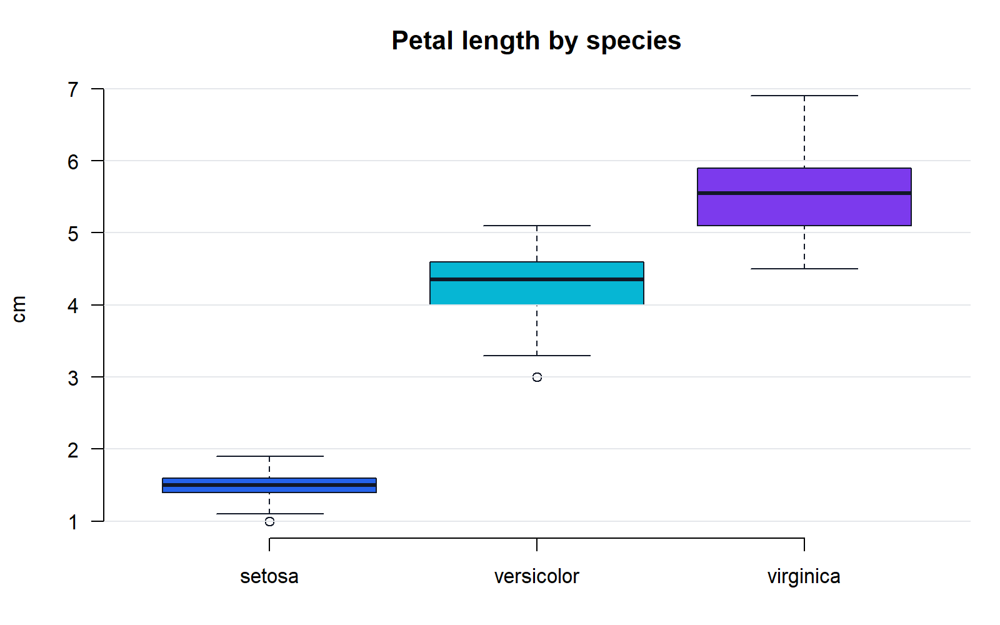

R: from zero to decisions
A complete, interactive guide to truly mastering R — from zero to a professional level in data analysis, programming, and visualization. Three levels, 51 modules, annotated examples, common mistakes, exercises with solutions, and three capstone projects.
How this guide is organized
Each module follows a progressive teaching methodology designed so that you don't just read — you practice and build:
Choose where to start
Basic Level
Installation, data types, vectors, data frames, importing data, and functions. Start here if you have never used R.
Intermediate Level
Programming, tidyverse, dplyr, ggplot2, statistics, Quarto, SQL, and dashboards.
Advanced Level
Functional programming, data.table, ML, time series, Shiny, Git, and deployment.
Tip: use the search box (press /), switch on dark mode with the button in the top-right corner, and copy any code block with the Copy button. Your reading progress is shown in the top bar.
What you need
Just a computer (Windows, macOS, or Linux) and the will to practice. In the first module we will install R and RStudio, both free and open source. All the code in this guide is up to date with R 4.6 (April 2026) and the tidyverse 2.0.
What is R and what is it for?
R is a programming language and a free, open-source environment designed specifically for statistical analysis, data science, and visualization. It is not "just another stats program": it is a full programming language whose raw material is data.
A little history (just the essentials)
The story of R begins before R. In the 1970s, John Chambers and his team at Bell Laboratories created S, a language designed so statisticians could explore data interactively instead of writing rigid Fortran programs. S was revolutionary, but its commercial version (S-PLUS) was expensive and closed-source.
In 1993, Ross Ihaka and Robert Gentleman, professors at the University of Auckland (New Zealand), released a free implementation inspired by S. They named it R: after their own initials and as a nod to its predecessor. In 1995 they released it under the GPL license (free software), and since 1997 it has been maintained by the R Core Team, a group of some twenty elite statisticians and developers, alongside an enormous worldwide community. That same year saw the birth of CRAN, the official package repository.
The most recent stable release is R 4.6.0 ("Because it was There", April 2026). R ships one major version per year plus interim patches, with remarkable stability: well-written code from ten years ago usually runs today without changes.
Why the history matters: R was designed by statisticians, for analyzing data. That heritage explains its design decisions: the interactivity, vectors as the basic unit, and statistics built in from the start. Python was born as a general-purpose language and "learned" data later; R was born for it.
What makes R unique
- Native vectorization. In R you operate on entire columns of data in one stroke, without writing loops. It is the same mental model as Excel ("apply the formula to the whole column"), but programmable and auditable.
- Statistics out of the box. Regressions (
lm()), hypothesis tests (t.test()), distributions, and frequency tables come included without installing anything. In other languages that requires external libraries. - Publication-quality graphics. With
ggplot2you produce figures ready for a consulting report, a paper, or a newspaper. - CRAN: ~22,000 reviewed packages. Every CRAN package goes through daily automated checks on several platforms. If a statistical technique has been published, there is almost certainly a package that implements it.
- Reproducible reports. With Quarto and R Markdown, the report and the analysis live in the same document: when the data changes, the entire PDF/Word/HTML regenerates.
See vectorization in action with a classic economics case: adjusting a series of salaries for a negotiated raise.
salaries <- c(2.4, 3.1, 1.8) # salaries in millions of pesos
salaries * 1.09 # a 9% raise for EVERYONE at onceNo loop, no cell to drag: R applied the operation to every element. Whether you have 3 salaries or 3 million, the code is identical.
Who uses R in the real world
| Sector | What they use it for | Examples |
|---|---|---|
| Pharma and healthcare | Clinical trials, biostatistics; the FDA now accepts regulatory submissions built in R | Roche, Novartis, R Consortium pilots with the FDA |
| Banking and finance | Credit risk, forecasting, regulatory reporting | Central and commercial banks worldwide |
| Data journalism | Graphics and analysis for news stories | BBC (built its bbplot package for ggplot2), Financial Times |
| Academia and research | Econometrics, social sciences, ecology, epidemiology | The de facto standard in applied statistics papers |
| Consulting and BI | Surveys, pricing, dashboards with Shiny | Economic and actuarial consulting firms |
R or Python? An honest take
It is not a war, and anyone who frames it that way is selling you smoke. They are tools with different centers of gravity:
| Criterion | R | Python |
|---|---|---|
| Statistics and econometrics | Built in, with packages at the academic frontier | Via libraries (statsmodels, scipy), sometimes lagging behind |
| Exploratory visualization | ggplot2: a coherent, expressive grammar | matplotlib/seaborn/plotly: powerful, less uniform |
| Reports and communication | Quarto and R Markdown, very mature | Jupyter, excellent for exploring, less so for final reports |
| Deep learning and software production | Possible, but not its strong suit | Clearly superior (PyTorch, web ecosystem) |
| Initial learning curve for analysts | From data to chart in minutes | Requires more general-programming "scaffolding" |
Many professionals use both, and they actually coexist well (Quarto runs both). The practical takeaway: if your focus is data analysis, statistics, and applied economics, R is one of the best learning investments you can make; and the data-logic skills you build will serve you just as well if you add Python someday.
The ecosystem: the map in four names
- CRAN — the official package repository. Installing from it is as simple as
install.packages("name"). - Posit (formerly RStudio, PBC) — the company that develops RStudio and Quarto and funds much of the tidyverse. RStudio is free and open source; Posit makes its living from enterprise products.
- tidyverse — a collection of packages (
dplyr,ggplot2,tidyr,readr…) with a shared grammar for manipulating and visualizing data. You will use it heavily throughout this guide. - Bioconductor — a repository specialized in bioinformatics and genomics, with more than 2,000 packages. If you come from economics you may never touch it, but it explains why R dominates the biosciences.
Don't try to memorize the ecosystem: for now it is enough to distinguish R (the language), CRAN (where packages come from), and RStudio/Posit (where you work). The rest will fall into place on its own as you move forward.
Your first code, line by line
# Everything after # is a comment: R ignores it completely
print("Hello, R") # prints text to the console
2 + 2 # R works as a calculator
sales <- c(120, 150, 90) # creates a vector with 3 values and SAVES it as "sales"
mean(sales) # computes the average of the vectorLet's break down what just happened:
- Line 1: the
#marks a comment. R does not execute it; it is a note for humans. - Line 2:
print()is a function: it takes something inside parentheses (its argument) and does something with it. The[1]in the output means that line starts at element 1 of the result. - Line 3: a bare expression is evaluated and displayed. R is interactive: you ask, it answers.
- Line 4: two key ideas here.
c()combines values into a vector, and<-(the assignment operator) saves the result under the namesales. Notice that this line prints nothing: assignment is silent. The object is now in memory, ready to use. - Line 5:
mean()takes the whole vector and returns its average: (120 + 150 + 90) / 3 = 120.
Key idea: in R, almost everything is a vector and almost everything is done with functions. Internalize those two ideas and the rest of the language falls into place naturally: a data frame is a set of vectors, a model is fitted with a function, a chart is built with functions applied to vectors.
Best practice: comment your code from day one, explaining the why (not the obvious). When you pick up an analysis six months later —or a colleague inherits it— those comments will be worth gold.
Without running anything yet, predict on paper what each line returns: 3 * 4, sqrt(16), c(1, 2, 3) * 2, and prices <- c(100, 250). Pay special attention to the last two.
View solution
3 * 4 → 12. sqrt(16) → 4 (square root). c(1, 2, 3) * 2 → 2 4 6: R multiplies each element of the vector; that is vectorization. prices <- c(100, 250) → prints nothing: it is an assignment, and the vector is stored in memory under the name prices. If you then type prices on its own, you will see [1] 100 250.
Think of a repetitive task you currently do in Excel (updating a monthly sales report, recalculating an index, cleaning the same dataset every week). Write it down: by the end of the basic level you should be able to sketch how to automate it in R, and it will become your personal practice project.
Installing R and RStudio
You need two pieces: R (the language's engine) and RStudio (the cockpit you pilot it from). Both are free, they install in that order, and in about 10 minutes you are ready to go.
The engine-and-cockpit analogy is not just decoration: R is the interpreter that actually runs your code —you could use it from a bare terminal— while RStudio is a development environment (IDE) that gives you an editor, a console, a plot viewer, and built-in help. If tomorrow you preferred a different cockpit (VS Code, for instance), the engine would still be the same R. For learning, RStudio is the standard choice and the one this guide uses.
Step 1 — Install R (from CRAN)
Download R only from cran.r-project.org, the official repository. Choose your operating system and follow the instructions in its tab:
Path: Download R for Windows → base → Download R 4.6.x for Windows. Run the .exe and accept the default options, with one important exception:
- Install to a path with no accents, ñ characters, or odd spaces, for example
C:\R\R-4.6.0. Paths likeC:\Users\José María\...or OneDrive-synced folders cause cryptic errors when installing packages. - Since R 4.2 only the 64-bit version exists; if a tutorial mentions 32-bit, it is outdated material.
What about RTools? It is a set of compilers for Windows. You don't need it today. It is only required when a package must be compiled from source (R will ask "Do you want to install from sources...?" — answer No and it will use the precompiled binary). Install it later only if a package demands it.
First identify your chip: Apple menu → About This Mac. Then download the correct .pkg from CRAN:
- Apple Silicon (M1, M2, M3, M4…): the
arm64package. - Intel: the
x86_64package. If you install the arm64 build on an Intel Mac, it won't start.
CRAN also recommends XQuartz (xquartz.org): some graphics packages use it for certain windows and devices. Install it once and forget about it.
The r-base in your distribution's repos usually runs several versions behind. To get R 4.6 on Ubuntu/Debian, add the official CRAN repository:
# Ubuntu: add the CRAN repository and its key, then install
sudo apt update
sudo apt install --no-install-recommends software-properties-common dirmngr
wget -qO- https://cloud.r-project.org/bin/linux/ubuntu/marutter_pubkey.asc | \
sudo tee -a /etc/apt/trusted.gpg.d/cran_ubuntu_key.asc
sudo add-apt-repository "deb https://cloud.r-project.org/bin/linux/ubuntu $(lsb_release -cs)-cran40/"
sudo apt install r-base r-base-devFor Fedora, openSUSE, or other distributions, follow the specific instructions on CRAN's Linux page. Also install r-base-dev (or its equivalent): on Linux many packages are compiled from source.
Step 2 — Install RStudio Desktop (Posit)
Download RStudio Desktop (free) from posit.co and install it with the default options. On startup, RStudio automatically finds and detects your R installation; there is nothing to configure.
Correct order: install R first and RStudio afterwards. RStudio is only the interface; it does not include the language. If you do it the other way around, RStudio will open with an "R not found" error.
To be clear about what each installer provides:
| Installer | What it puts on your machine |
|---|---|
| R (CRAN) | The language interpreter, the base packages (stats, utils, graphics…), the basic console, and Rscript for running scripts from the terminal. |
| RStudio (Posit) | The editor with syntax highlighting and autocomplete, the integrated panes, the project manager, and viewers for plots, data, and help. Zero statistics: all of that lives in R. |
Step 3 — Verify the installation
Open RStudio and type into the console (the pane with the > symbol):
R.version.string # installed R version
sessionInfo() # full detail: platform, locale, loaded packagesIf you see version 4.6.x, everything is in order. sessionInfo() will also be your best ally when asking for help: pasting its output into a forum tells anyone exactly what environment you are running.
Plan B: Posit Cloud (R in the browser)
If you work on a locked-down corporate machine, a borrowed computer, or you simply want to start right now, use Posit Cloud: it is the full RStudio running in the browser, with a free plan that covers the entire basic level. You create an account, open a "New Project", and get exactly the same interface you will see in the next section.
Tip for teams and classrooms: Posit Cloud is also great for standardizing: everyone works with the same R version and the same packages, without fighting heterogeneous local installations.
Common installation problems
| Symptom | Likely cause | Solution |
|---|---|---|
| Antivirus blocks the installer or deletes R files | False positives, common on corporate machines | Verify you downloaded from CRAN/Posit, add an exclusion for the R folder, or ask IT to whitelist it |
| "Permission denied" when installing packages | R installed in a folder that requires administrator rights | Accept when R offers to create a personal package library in your user folder, or reinstall R in C:\R\ |
| Strange errors with paths containing accents or spaces | A Windows username like José María or folders in OneDrive | Install R and keep your projects in simple, local paths (e.g. C:\R\projects\) |
install.packages() downloads nothing | Corporate proxy or firewall | Ask IT for the proxy details; R accepts them via environment variables (http_proxy, https_proxy) |
| A tutorial mentions "32-bit R" or 3.x versions | Outdated material | Ignore it: since R 4.2 only 64-bit exists, and this guide assumes R ≥ 4.6 |
When you upgrade R in the future: installing a new major version (e.g. moving from 4.6 to 4.7) does not automatically migrate your packages: you will have to reinstall them. That is normal, it happens once a year, and it takes a few minutes with install.packages().
Install R and RStudio (or open Posit Cloud) and run these three checks in the console: (1) R.version.string to confirm version 4.6 or later; (2) 2 + 2 to confirm the engine responds; (3) .libPaths() to discover which folder your packages will be stored in.
View solution
You should see something like [1] "R version 4.6.0 (2026-04-24)", then [1] 4, and in .libPaths() one or two paths: the system library (inside the R installation) and, sometimes, a personal library in your user folder. If the version is below 4.6, download again from CRAN; if 2 + 2 does not respond, review the common-problems table.
The RStudio interface
RStudio organizes your work into four panes. Understanding what each one does —and how code flows between them— will save you hours and give you professional analyst habits from day one.
The four panes
| Pane | What it is for | Detail that matters |
|---|---|---|
| Source (top left) | Editor for .R scripts and Quarto documents, plus the data viewer | This is where you write and save your code. It is your permanent working document. If you don't see it, open one with File → New File → R Script. |
| Console (bottom left) | Runs code and shows results; the R interpreter lives here | The > symbol means "ready for input". If you see +, R is waiting for you to finish an incomplete expression (you missed a closing parenthesis): press Esc to cancel. |
| Environment / History (top right) | Objects in memory (vectors, data frames, functions) and command history | It is your "memory X-ray": if an object doesn't appear here, it doesn't exist. A data frame shows its dimensions (e.g. 500 obs. of 8 variables) and can be inspected with a click. |
| Files / Plots / Packages / Help (bottom right) | Project files, plots, installed packages, and documentation | The Help tab is gold: ?mean in the console opens the official documentation for mean() right there. |
The real workflow
The panes are not four isolated compartments: they form a circuit your code flows through. The cycle you will repeat hundreds of times a day is:
- 1. You write one or more lines in the Source (the script).
- 2. You run the line under the cursor with Ctrl+Enter (no need to select it).
- 3. You watch the result in the Console.
- 4. If you assigned something with
<-, the object appears in Environment; if you plotted, the figure appears in Plots. - 5. You fix or continue in the script, and start over.
# Type this in a script (Source) and run it line by line with Ctrl+Enter
monthly_cpi <- c(0.62, 0.45, 0.71, 0.38) # CPI % change, Jan-Apr
mean(monthly_cpi) # monthly average
sum(monthly_cpi) # approximate cumulative inflationAfter the first line, look at the Environment pane: you will see monthly_cpi with its four values. That is the complete circuit: Source → Console → Environment.
Why you should never work only in the console
The console is an ephemeral conversation: whatever you type there is lost when the session closes. The script is the document: the complete, reproducible recipe of your analysis. The professional rule is simple: the console is for trying things; the script is the truth. Everything you want to keep —loading data, cleaning, computing, plotting— must live in the script, so that running it top to bottom reproduces the entire analysis. When a client asks for "the same report but with this quarter's data", you will swap the input file, run the script, and be done. Had you worked in the console, you would have to rebuild everything from memory.
Warning sign: if you have typed more than two or three "keeper" commands directly into the console, stop and move them into a script. A result you cannot reproduce is a result you do not have.
RStudio Projects (.Rproj): your unit of work
A Project (File → New Project → New Directory) is a folder that RStudio treats as a self-contained unit, marked by an .Rproj file. The central benefit is the working directory: when you open the project, R automatically positions itself in that folder, so you can read data with relative paths like "data/sales.csv" instead of absolute paths like "C:/Users/luis/Documents/consulting/client/data/sales.csv".
Why does this matter so much? Portability. The absolute path only exists on your machine; the relative one works on your colleague's, on the client's server, and on Posit Cloud. You zip the project folder, send it, and the analysis runs as-is. On top of that, each project keeps its own history and session, so you can switch between client A's project and client B's without cross-contamination.
Best practice from day one: one analysis = one project. And avoid setwd() with absolute paths: it is the classic way to write code that only works on your own computer. The project handles the working directory for you.
Essential shortcuts
| Shortcut (Win/Linux) | macOS | Action |
|---|---|---|
| Ctrl+Enter | Cmd+Enter | Run the current line or selection |
| Alt+- | Option+- | Insert <- (assignment) |
| Ctrl+Shift+M | Cmd+Shift+M | Insert the pipe |> / %>% |
| Ctrl+Shift+C | Cmd+Shift+C | Comment / uncomment the selected lines |
| Ctrl+Shift+R | Cmd+Shift+R | Insert a section header in the script |
| Ctrl+Shift+F10 | Cmd+Shift+F10 | Restart the R session (a clean slate) |
| Ctrl+L | Cmd+L | Clear the console (does not delete objects, only the text) |
| F1 on a function | F1 | Open its help in the Help pane |
| Alt+Shift+K | Option+Shift+K | Show the full shortcut map |
Tab completion: type the first letters of a function or object and press Tab: RStudio suggests names, shows the function's arguments, and even a snippet of its help. Type mea + Tab and you'll see it. Inside a function's parentheses, Tab suggests argument names. Use it always: it prevents typos and teaches you function signatures as you go.
Recommended settings (and why)
In Tools → Global Options → General, make two changes:
- Uncheck "Restore .RData into workspace at startup".
- Set "Save workspace to .RData on exit" to Never.
The reason: with that option on, R saves all your objects when you quit and restores them when you open. It sounds convenient, but it is a trap: your analysis comes to depend on hidden state accumulated over weeks —objects you no longer know how you created— and the day you switch machines, nothing will work. Turning it off forces your script to contain everything needed to rebuild the analysis from scratch. It is the number-one habit of reproducibility.
The habit's companion: restart the session often (Ctrl+Shift+F10) and rerun your script from the top. If something breaks after the restart, you caught a hidden dependency early —not the night before the deadline.
Customization: make it your space
In Tools → Global Options → Appearance you can pick a dark theme (many people use Tomorrow Night or similar for long sessions), increase the font size, and change the typeface (a monospaced font like Fira Code or JetBrains Mono improves code readability). In Pane Layout you can rearrange the panes if you prefer, say, the console on the right. None of this changes how your code runs; it does change how many hours your eyes can take.
Create a project called r-practice (File → New Project → New Directory). Inside it, create a script 01_exploration.R with these lines: expenses <- c(450, 320, 610, 280), mean(expenses), and max(expenses). Run them one by one with Ctrl+Enter and answer: what appeared in Environment and what did the console show at each step?
View solution
After the first line, the console prints nothing (it is an assignment), but expenses appears in Environment with its four values. mean(expenses) prints [1] 415 and max(expenses) prints [1] 610; neither creates a new object because you did not use <-, so Environment still shows only expenses. That contrast —assigning saves silently, evaluating prints without saving— is the essential mechanic of R.
Get your RStudio ready for serious work: turn off .RData saving, choose a theme and font size, and check with Alt+Shift+K that you can locate the shortcuts for run, assign, and insert pipe. Close RStudio, reopen it from the r-practice.Rproj file, and confirm that Environment starts empty: that clean screen is your new normal.
Data types
Every value in R belongs to a type, and the type decides which operations are valid: you can add two numbers, but not a number and a piece of text. Mastering the type system is your vaccine against half the errors you will see in real-world data analysis.
The mental model: the type sets the rules of the game
Think of the type as each value's "ID card": it tells R what can be done with it. A salary stored as a number (2450000) can be averaged; the same salary stored as text ("2,450,000", typical of a badly exported Excel file) cannot. When a calculation fails or returns something absurd, the first question is always: what type are my data?
| Type | Example | What it stores | Typical use in analysis |
|---|---|---|---|
double (alias numeric) | 3.14, 2450000, -0.075 | Real numbers with decimals (64-bit). This is the default type of any number you write. | Salaries, rates, prices, CPI. |
integer | 5L, 2024L | Exact whole numbers. The L forces the integer type; without it, 5 is a double. | Counts, years, number of children in a survey. |
character | "Magdalena", 'text' | Text strings, in double or single quotes. | Department names, DANE codes, open-ended survey answers. |
logical | TRUE / FALSE | Boolean values: true or false. | Filters (salary > minimum wage?), dummy variables. |
complex | 2+3i | Complex numbers. | Very rare outside advanced mathematics. |
raw | as.raw(255) | Raw bytes. | You will almost never see it in data analysis. |
Why do "numeric" and "double" look like the same thing? Historically R calls the class numeric and the internal type double (64-bit double precision). In practice they are two names for the same thing; class(3.14) says "numeric" and typeof(3.14) says "double".
integer vs. double: why isn't 0.1 + 0.2 equal to 0.3?
Doubles are stored in binary with finite precision, and many decimals (like 0.1) have no exact binary representation, just as 1/3 has no exact decimal representation. The result: minuscule errors that break exact comparisons.
0.1 + 0.2 == 0.3 # surprise!
print(0.1 + 0.2, digits = 20) # what R actually stores
print(0.3, digits = 20)
sqrt(2)^2 == 2 # same phenomenon
sqrt(2)^2 - 2 # the error is tiny, but it existsIntegers, by contrast, are exact but have a ceiling: the maximum is .Machine$integer.max (2,147,483,647, about 2.1 billion). For large monetary amounts or GDP figures, use double: it gives up theoretical exactness in the decimals, but handles enormous magnitudes without overflowing.
.Machine$integer.max
2147483647L + 1L # integer overflow
2147483647 + 1 # as a double, no problemNever compare decimals with ==: floating-point error is not an R bug, it is a limitation of every computer (Python, Excel and Stata suffer from it too). In the operators section you will see the correct alternatives: all.equal() and dplyr::near().
typeof() vs. class(): two different questions
typeof() asks "how is this stored in memory?" (the base type). class() asks "how should this object behave?" (the label functions use to decide what to do with it). For simple values they usually agree, but for richer objects they diverge.
typeof(3.14); class(3.14) # double / numeric
typeof(5L); class(5L) # integer / integer
typeof(TRUE); class(TRUE) # logical / logical
# Where they diverge: a date is STORED as a number
# (days since 1970-01-01) but BEHAVES like a date
today <- Sys.Date()
typeof(today)
class(today)Implicit coercion: the hierarchy R applies without warning
A vector in R can only hold one type. If you mix types, R does not complain: it converts ("promotes") everything to the most flexible type following a fixed hierarchy, always in the direction that loses no information:
| Hierarchy | logical | → integer | → double | → character |
|---|---|---|---|---|
| Promotion example | TRUE | 1L | 1 | "1" |
| Why | Every TRUE is a valid 1 | Every integer is a valid double | Every double can be written as text | Text accepts everything (and there is no way back) |
c(TRUE, 1L) # logical + integer -> integer
c(1L, 2.5) # integer + double -> double
c(1, "two") # double + character -> character (goodbye, arithmetic!)
# The useful coercion: TRUE counts as 1, FALSE as 0
above_minimum <- c(TRUE, FALSE, TRUE, TRUE, FALSE)
sum(above_minimum) # how many earn above minimum wage
mean(above_minimum) # proportion above itAnalyst's trick: sum() on a logical vector counts the TRUEs and mean() computes the proportion. mean(salaries > 2000000) gives you the percentage of people earning more than two million directly, with no filtering or manual counting.
Explicit coercion: the as.*() functions
When you decide the conversion yourself, use the as.*() family. If the conversion is impossible, R does not make things up: it returns NA and (in the numeric case) warns you.
as.numeric("3.5") # text that "looks like a number": works
as.integer(3.9) # truncates, does NOT round!
as.character(100) # number to text
as.logical(0) # 0 is FALSE, any other number is TRUE
as.numeric("not avail.") # impossible -> NA with a warning
as.logical("hello") # impossible -> NA (this one WITHOUT a warning)Best practice: when importing data, if a column that should be numeric arrives as character, that is a sign it carries junk (text like "N/A", thousands separators, currency symbols). Before blindly applying as.numeric(), inspect with unique() which values are contaminating it: every coercion warning is a data point silently turning into NA.
Special values: NA, NULL, NaN and Inf
R precisely distinguishes four flavors of "there is no normal number here". Confusing them is a classic source of errors:
| Value | Meaning | Typical example | Detected with |
|---|---|---|---|
NA | Missing data: the observation exists, the value is unknown. | A survey respondent who does not report their income. | is.na(x) |
NULL | Absence of an object: there is nothing, not even a placeholder. Length zero. | The result of a list without that element. | is.null(x) |
NaN | "Not a Number": an undefined mathematical operation. | 0/0, Inf - Inf, log(-1). | is.nan(x) |
Inf / -Inf | Infinity: overflow or division by zero. | 1/0, log(0) gives -Inf. | is.infinite(x), is.finite(x) |
# Survey incomes: the third respondent did not answer
income <- c(1300000, 2450000, NA, 3100000, 1800000)
mean(income) # NA contaminates the whole calculation
mean(income, na.rm = TRUE) # average ignoring missing values
sum(is.na(income)) # how many are missing
which(is.na(income)) # at which positions
# NULL disappears; NA holds its place
length(c(1, NULL, 3)) # NULL does not count
length(c(1, NA, 3)) # NA does occupy a position
# NaN and Inf in calculations
0 / 0; 1 / 0; log(0)
is.finite(c(1.5, Inf, NA, NaN)) # only the first is a "usable number"Common mistake: comparing against NA with ==. x == NA always returns NA, never TRUE or FALSE, because R reasons: "if I don't know its value, I can't know whether it's equal either". Always use is.na(x). Subtle detail: is.na(NaN) is TRUE (every NaN counts as missing), but is.nan(NA) is FALSE.
Finally, NA has a type. Plain NA is logical (typeof(NA) returns "logical"), and typed versions exist: NA_integer_, NA_real_ and NA_character_. You will need them in type-strict functions such as dplyr::if_else(), which requires both branches to return the same type: if_else(income > 0, income, NA_real_).
Without running anything, predict the type of c(1L, 2.5), of c(TRUE, 3), of c(FALSE, 2L) and of c(1, "two"). Then verify with typeof(). What rule did R follow in each case?
View solution
c(1L, 2.5) → double (the integer gets promoted). c(TRUE, 3) → double (TRUE becomes 1). c(FALSE, 2L) → integer (the logical climbs only one step). c(1, "two") → character. In every case R applied the hierarchy logical → integer → double → character, always promoting toward the more flexible type so no information is lost.
You have rates <- c(0.045, NA, 0.098, NaN, Inf, 0.032) with badly entered interest rates. Compute: (a) how many values are missing according to is.na(), (b) how many are usable (finite), and (c) the average using only the finite values.
View solution
rates <- c(0.045, NA, 0.098, NaN, Inf, 0.032)
sum(is.na(rates)) # 2: the NA and the NaN (is.na covers both)
sum(is.finite(rates)) # 3: only 0.045, 0.098 and 0.032
mean(rates[is.finite(rates)]) # 0.05833333Note that na.rm = TRUE would not have been enough: it removes NA and NaN, but lets Inf through and the average would be Inf. is.finite() is the complete filter.
Variables and objects
A variable is not a box containing a value: it is a label attached to an object. In R everything you create (a number, a table, a regression model) is an object, and names are how you find it later.
Assignment: four forms, one convention
salary <- 2500000 # R's idiomatic operator
cpi = 5.2 # valid, but reserved for another use
0.0925 -> interest_rate # rightward assignment (rare)
assign("base_year", 2018) # programmatic assignment (advanced)
salary
interest_rateWhy <- and not =? Both assign, but the community reserves = for passing arguments to functions: in mean(x, na.rm = TRUE), that = creates no na.rm variable. Using <- for variables and = for arguments makes code readable at a glance: you know what is an assignment and what is an argument. RStudio shortcut: Alt+-.
What happens under the hood: names pointing to objects
When you write salary <- 2500000, R creates the object 2500000 in memory and sticks the label salary on it. If you then write new_salary <- salary, nothing gets duplicated yet: both labels point to the same object. Only when you modify one of them does R make a copy (copy-on-modify). Practical consequence: modifying a "copy" never alters the original.
salary <- 2500000
new_salary <- salary # second label on the same value
new_salary <- new_salary * 1.12 # a 12% raise
salary # the original stays intact
new_salary # only the label you modified changedMental model: variables are labels on objects, not boxes with things inside. The same object can carry several labels, and peeling off one label (rm()) does not destroy the others. This model will save you when working with large data frames: passing a table to a function does not copy it until the function tries to modify it.
Naming rules (and what is forbidden)
- A valid name starts with a letter (or a dot not followed by a number) and contains only letters, numbers,
.and_. That is whycpi_2024works and2024_cpidoes not. - R is case-sensitive:
Age,ageandAGEare three different variables (and a classic source of "object not found"). - Reserved words cannot be used as names:
if,else,for,while,function,TRUE,FALSE,NULL,NA,Inf,NaN… TryingTRUE <- 1throws an immediate error. - With backticks you can create "illegal" names like
`interest rate`, but you will have to type the backticks every time. Avoid it.
TRUE <- 1 # reserved words are locked down
T <- 0 # ...but their shortcuts T and F are NOT!Careful with T and F: they are just variables that default to TRUE and FALSE, and anyone (including you) can overwrite them: T <- 0 is legal, and from that point on any code using T is corrupted. Always write TRUE and FALSE in full.
Style: snake_case and self-explanatory names
The tidyverse style guide — the de facto standard — recommends snake_case: lowercase words separated by _. A good name saves the reader a comment:
| Problematic name | Why it fails | Recommended version |
|---|---|---|
x, temp, data2 | They say nothing about their contents; in two weeks not even you will remember. | monthly_income, survey_clean |
MonthlyIncome | CamelCase works, but breaks the ecosystem's convention. | monthly_income |
unemployment.rate | The dot is legal, but in R it has technical meaning (S3 methods); it confuses. | unemployment_rate |
mean, data, c, df | They shadow base R function names and sow confusion. | average_income, cpi_data |
SalaryInColombianPesosForYear2024 | Descriptive, but untypeable. | salary_cop_2024 |
The global environment: your workbench
Every variable you create in the console lives in the global environment (what RStudio shows in the Environment pane). You can list it, query it and clean it:
ls() # list the objects you created
exists("salary") # does an object with that name exist?
rm(base_year) # delete an object
rm(list = ls()) # wipe the ENTIRE environment (irreversible)Silent overwriting: R never warns you when you reuse a name. If you compute total <- sum(sales_2023) and two hundred lines later write total <- sum(sales_2024), the first figure vanishes without a sound, and any later code that assumes the old value produces wrong results with no error at all. It is one of the hardest bugs to hunt down: use specific names (total_2023, total_2024) and run your scripts top to bottom in a clean environment.
X-raying an object: the inspection functions
Before operating on an unknown object, interrogate it. These five functions are your diagnostic kit:
salaries <- c(manager = 8500000, analyst = 3200000, assistant = 1750000)
str(salaries) # compact structure: type, dimension and first values
class(salaries) # how it behaves
typeof(salaries) # how it is stored
length(salaries) # how many elements it has
attributes(salaries) # attached metadata (here, the names)Golden habit: str() is the first function you should apply to any freshly imported data. In a single line per column it shows types, dimensions and a sample of values: it instantly catches the salary column that arrived as text or the year that arrived as a decimal.
Create nominal_salary = 2,800,000 and inflation = 0.052 (5.2% per year). Compute the real salary as nominal_salary / (1 + inflation), store it in real_salary and print it. Then verify with ls() that the three variables exist and with typeof() that all are double.
View solution
nominal_salary <- 2800000
inflation <- 0.052
real_salary <- nominal_salary / (1 + inflation)
real_salary
ls()
typeof(real_salary)The real salary (~2,661,597) shows how much purchasing power the nominal figure retains after a year of 5.2% inflation.
Predict what this code prints and explain why, using the label model: a <- 100; b <- a; a <- 50; b
View solution
It prints 100. When you run b <- a, the label b ends up pointing to the value a had at that moment (100). Reassigning a <- 50 only moves the label a to a new object; it does not touch the object b points to. Variables do not stay "connected" to each other: assignment copies the reference to the current value, it does not create a permanent link.
Operators
Operators are the verbs of the language: they calculate, compare and combine conditions. Here they all are, including the two almost nobody explains well (%% and %in%) and the three traps that sooner or later bite every analyst.
7 + 3 # 10 addition
7 - 3 # 4 subtraction
7 * 3 # 21 multiplication
7 / 3 # 2.333333 division (always returns a double)
7 %% 3 # 1 modulo: the REMAINDER of dividing 7 by 3
7 %/% 3 # 2 integer division: the quotient without decimals
2 ^ 3 # 8 exponentiationThe modulo %% is the most underrated of the group. Three real uses:
# 1) Even and odd: the remainder mod 2 is 0 or 1
c(2020, 2021, 2022, 2023) %% 2 == 0
# 2) Cycles: convert a running month count into a calendar month (1-12)
cumulative_month <- c(13, 18, 24, 25)
(cumulative_month - 1) %% 12 + 1
# 3) Decompose numbers: last digit and "the rest"
code <- 4589
code %% 10 # last digit (useful for check digits)
code %/% 10 # the number without its last digitAnd %/% shines for grouping: (month - 1) %/% 3 + 1 turns any month into its quarter.
5 == 5 # TRUE equality (double ==, not to be confused with =)
5 != 3 # TRUE not equal
5 > 3 # TRUE greater than
5 <= 2 # FALSE less than or equal
"a" < "b" # TRUE strings compare alphabetically
# Comparisons are vectorized: they compare element by element
salaries <- c(1300000, 2450000, 3100000, 1800000)
salaries > 2000000The trap in this group: == with decimals. Because of the floating-point precision you saw in data types, two calculations "equal on paper" can differ at the 16th digit:
1.1 - 0.7 == 0.4 # FALSE, painful as it is
all.equal(1.1 - 0.7, 0.4) # TRUE: compares with tolerance
isTRUE(all.equal(1.1 - 0.7, 0.4)) # the safe form for use inside if
dplyr::near(1.1 - 0.7, 0.4) # the tidyverse's vectorized equivalentTRUE & FALSE # FALSE vectorized AND: both must hold
TRUE | FALSE # TRUE vectorized OR: one is enough
!TRUE # FALSE negation
xor(TRUE, TRUE) # FALSE exclusive OR: one or the other, but not both
# In data filters, & and | work element by element
age <- c(17, 25, 34, 68)
employed <- c(FALSE, TRUE, TRUE, FALSE)
age >= 18 & employed # employed and of working ageThe double versions && and || are scalar: they demand a single value on each side and are used in if conditions. They also short-circuit: if the left side already decides the result, the right side is never evaluated.
(5 > 3) && (2 < 4) # TRUE: both scalar conditions
# Short-circuit as a guard: if x is NULL, x > 0 is never evaluated
x <- NULL
!is.null(x) && x > 0 # FALSE without error; with & it would have failed
# Since R 4.3, && with vectors of length > 1 is an ERROR (it used
# to silently take the first element: worse)
c(TRUE, FALSE) && TRUE%in% asks whether each element on the left belongs to the set on the right. It is the elegant replacement for endless chains of == glued together with |:
dept <- c("Magdalena", "Antioquia", "Atlántico", "Bolívar", "Cesar")
# Clumsy and fragile:
dept == "Magdalena" | dept == "Atlántico" | dept == "Bolívar"
# Clear and scalable:
dept %in% c("Magdalena", "Atlántico", "Bolívar")
# Bonus: %in% handles NA sensibly, == does not
income_na <- c(100, NA, 300)
income_na == 100 # the NA propagates
income_na %in% 100 # %in% always answers TRUE/FALSERule of thumb: if you are comparing against two or more values, or if your vector may contain NA, use %in%. In data filters (the Caribbean region, the months of a quarter, the ISIC codes of interest) it is the operator you will use most.
One vs. two: & and | operate element by element on vectors (for filtering data); && and || return a single value and are used in if conditionals. Since R 4.3, applying && or || to vectors longer than 1 throws an error, which is a blessing: it used to silently take the first element and hide bugs.
Classic mistake: using = instead of ==. x = 5 assigns; x == 5 compares. Inside an if, the first usually raises a syntax error, but inside a function call it can slip through as an argument and produce baffling behavior.
Precedence: why -2^2 is -4
When an expression mixes operators, R applies them in a fixed order, not left to right. From highest to lowest priority:
| Priority | Operators | Example |
|---|---|---|
| 1 (highest) | ^ | 2^3^2 = 512 (it also associates to the right: 2^(3^2)) |
| 2 | unary -, + (sign) | -2^2 = −4, because it is -(2^2) |
| 3 | : (sequences) | 1:3*2 = 2 4 6, i.e. (1:3)*2 |
| 4 | %%, %/%, %in%, |> | 10 %% 3 * 2 = 2 |
| 5 | *, / | 2 + 3 * 4 = 14 |
| 6 | binary +, - | 1:5 - 1 = 0 1 2 3 4 (not 1:4!) |
| 7 | <, >, <=, >=, ==, != | 2 + 2 == 4 is (2+2) == 4 |
| 8 | ! | !x == 5 is !(x == 5), not (!x) == 5 |
| 9 | &, && | AND is evaluated before OR |
| 10 | |, || | a & b | c is (a & b) | c |
| 11 (lowest) | <-, = | assignment happens last |
-2^2 # -4: the power is computed BEFORE the sign
(-2)^2 # 4: the parentheses force the order you wanted
1:5 - 1 # 0 1 2 3 4: first the sequence, then the subtraction
1:(5 - 1) # 1 2 3 4: what you were probably afterBest practice: do not memorize the full table: whenever an expression combines three or more operators, use parentheses even if they are redundant. ((year %% 4) == 0) & ((year %% 100) != 0) reads effortlessly and removes all ambiguity, for R and for the colleague who inherits your code.
Comparing money: if you work with monetary figures that carry multiplications by rates (interest, deflators, exchange rates), assume == will fail you at some point. To check that a reconciliation balances, prefer abs(a - b) < 0.01 (one-cent tolerance) or dplyr::near(a, b, tol = 0.01).
Is 2025 a leap year? A year is a leap year if it is divisible by 4 and, in addition, either not divisible by 100 or divisible by 400. Write it as a single logical expression with %% and test it with 2000 and 1900 as well (the first is a leap year; the second is not).
View solution
year <- c(2025, 2000, 1900)
(year %% 4 == 0) & (year %% 100 != 0 | year %% 400 == 0)2025 is not divisible by 4; 2000 passes via the 400 rule; 1900 is divisible by 100 but not by 400, so it is ruled out. Note that being a vectorized expression (with & and |, not &&), it evaluated all three years in one go.
You have months <- 1:12. Using only operators from this section: (a) get a logical vector flagging the months of the first half of the year, (b) compute each month's quarter with %/%, and (c) flag with %in% the months of the tourist "high season" (1, 6, 7, 12).
View solution
months <- 1:12
months <= 6 # (a) first half of the year
(months - 1) %/% 3 + 1 # (b) quarter
months %in% c(1, 6, 7, 12) # (c) high seasonWithout running it, predict the result of -1:3^2 %% 2 == 0 | FALSE. Break it down operator by operator using the precedence table and then verify it in the console. Hint: ^ goes first, then :... and the unary - applies before :, so the sequence is (-1):9.
Vectors
The vector is THE central structure of R: an ordered sequence of values of the same type. It is not just one structure among many: in R, everything else (matrices, factors, data frames) is built on top of vectors. Understanding vectors is, quite literally, understanding R.
Here is the key mental model: in R there are no scalars. When you type 5, R treats it as a numeric vector of length 1. That is why printing it shows [1] 5: that [1] tells you "this is the element in position 1". Every R function is designed with vectors in mind, and that explains why the language feels so natural for data analysis: a column of sales, a series of prices, or the answers to a survey are vectors.
Creating vectors: c(), sequences, and repetitions
The c() function (for combine) is the most used in all of R. But for regular sequences there are more expressive tools:
sales <- c(150, 172, 168, 195) # c() = combine values
1:6 # integer sequence in steps of 1
seq(0, 1, by = 0.25) # you control the step
seq(0, 100, length.out = 5) # you control how many elements
seq_len(4) # 1 2 3 4 (safe for loops)
seq_along(sales) # 1 2 3 4 (one index per element)To repeat values, rep() has two arguments people mix up: times repeats the whole block; each repeats each element before moving on to the next. Compare them side by side:
rep(c("T1", "T2"), times = 3) # the whole block, 3 times
rep(c("T1", "T2"), each = 3) # each element, 3 times in a row
rep(c("A", "B"), times = c(2, 4)) # different repetitions per elementseq_along() will save you later on: when you write loops, use for (i in seq_along(x)) instead of for (i in 1:length(x)). If x is empty, 1:length(x) produces 1 0 (the loop runs twice with invalid indices!), whereas seq_along(x) produces an empty vector and the loop never runs. It is the difference between a robust script and a silent bug.
The 5 ways to index (it starts at 1!)
Indexing means asking the vector for a subset using square brackets [ ]. Mastering all five ways is essential because they are exactly the same ones you will later use with matrices and data frames:
sales <- c(jan = 150, feb = 172, mar = 168, apr = 195)
sales[1] # 1. positive position: "give me element 1"
sales[c(2, 4)] # ...or several at once
sales[-1] # 2. negative position: "everything EXCEPT 1"
sales[sales > 165] # 3. logical condition: "the ones that qualify"
sales["mar"] # 4. by name
which(sales > 165) # 5. which(): at which POSITIONS does it hold?Logical indexing deserves a moment of your attention: sales > 165 produces the vector FALSE TRUE TRUE TRUE, and when you use it inside [ ] R keeps only the positions with TRUE. This pattern — build a condition and filter with it — is the heart of every data filter you will ever write in R, including filter() from the tidyverse.
Very common mistake: in R, indices start at 1, not at 0 (unlike Python or C). v[0] does not throw an error: it returns an empty vector of length 0, which is worse because the bug goes unnoticed. And asking for a position that does not exist, like v[10] on a vector of 4, returns NA without complaint.
Named vectors: names(sales) returns "jan" "feb" "mar" "apr", and you can also assign names afterwards with names(v) <- c(...). A named vector works like a mini dictionary: it is the simplest way to pair a label with a value without needing a data frame yet.
Vectorization: R's superpower
In most languages, applying VAT to 4 prices would mean writing a loop. In R, operations act on the whole vector at once. Compare the same calculation done both ways:
prices <- c(100, 250, 80, 120)
with_vat <- numeric(length(prices)) # empty vector of the right size
for (i in seq_along(prices)) {
with_vat[i] <- prices[i] * 1.19
}
with_vatprices <- c(100, 250, 80, 120)
with_vat <- prices * 1.19 # one single line, no indices, no loop
with_vatSame result, but the vectorized version is shorter, more readable, and much faster: the "loop" happens internally in compiled C code, not in R. The why matters: when you think "I need to do X to every element", your first reflex in R should not be a loop, but asking yourself whether the operation is already vectorized. It almost always is: +, *, sqrt(), log(), round(), comparisons, paste()... they all work element by element.
costs <- c(80, 190, 60, 95)
margin <- prices - costs # operation between two vectors, pairwise
margin
margin / prices * 100 # percentage margin of each productRecycling: the rule and the danger
What happens if you operate on two vectors of different lengths? R recycles the shorter one: it repeats it until it reaches the length of the longer one. That is what makes prices * 1.19 work (the 1.19, a vector of length 1, gets recycled 4 times). The rule: if the longer length is an exact multiple of the shorter one, R recycles silently; if it is not, R recycles anyway but issues a warning.
c(1, 2, 3, 4) + c(10, 20) # 4 is a multiple of 2: recycles without a word
c(1, 2, 3) + c(10, 20) # 3 is NOT a multiple of 2: recycles AND warnsThe real danger of recycling is not the warning, but the case where there is NO warning. If you accidentally add a 12-month vector to a 4-quarter vector, the lengths line up (12 is a multiple of 4), R says nothing, and you get plausible but wrong numbers. When results look suspicious, check lengths with length().
Essential summary and ordering functions
| Function | What it does | Example with x <- c(30, 10, 20) |
|---|---|---|
sum(x) / mean(x) | Sum / average | 60 / 20 |
cumsum(x) | Cumulative sum | 30 40 60 |
diff(x) | Consecutive differences | -20 10 |
sort(x) | The values, sorted | 10 20 30 |
order(x) | The POSITIONS that would sort them | 2 3 1 |
rank(x) | The rank of each value | 3 1 2 |
rev(x) | Reverses the order | 20 10 30 |
unique(x) | Values without duplicates | 30 10 20 |
The sort() vs order() distinction is confusing at first: sort() gives you the values already sorted; order() tells you in what order to take the positions to sort them. order() is the important one, because it lets you sort one vector according to another: labels[order(sales)] gives you the labels from lowest to highest sales.
Putting it all together: analyzing a sales series
Bring everything together with a typical economic-analysis case: monthly sales for the first half of the year (in millions of pesos).
sales <- c(jan = 150, feb = 172, mar = 168, apr = 195, may = 210, jun = 250)
cumsum(sales) # cumulative sales for the year
diff(sales) # absolute month-over-month change
round(diff(sales) / sales[-6] * 100, 1) # monthly % growth
names(sales)[which.max(sales)] # which was the best month?
mean(sales > 180) # share of months above the 180 targetNote the last trick: mean() of a logical vector gives the proportion of TRUE values (because TRUE counts as 1 and FALSE as 0). Likewise, sum() of a logical counts how many meet the condition. They are two of the most-used idioms in R data analysis.
Best practice: before computing anything with a new vector, inspect it: length(), summary(), and head() tell you in seconds whether it has the expected length, odd values, or NAs. Remember that if there are NAs, functions like mean() return NA unless you use mean(x, na.rm = TRUE).
Given grades <- c(ana = 4.5, beto = 3.0, caro = 2.8, dani = 4.9, eli = 3.7): (a) how many grades are there and what is the average? (b) how many are passing grades (≥ 3.0) and what proportion do they represent? (c) which students passed? (d) show the names sorted from best to worst grade.
View solution
grades <- c(ana = 4.5, beto = 3.0, caro = 2.8, dani = 4.9, eli = 3.7)
length(grades) # 5
mean(grades) # 3.78
sum(grades >= 3.0) # 4 (TRUE counts as 1)
mean(grades >= 3.0) # 0.8 (proportion that passed)
names(grades)[grades >= 3.0] # "ana" "beto" "dani" "eli"
names(grades)[order(grades, decreasing = TRUE)]
# "dani" "ana" "eli" "beto" "caro"Using the sales vector from the integrated example, compute in a single line the average monthly percentage growth for the half-year. Hint: combine mean(), diff(), and the negative indexing sales[-6].
Matrices
A matrix is not a new structure: it is a vector with a dim attribute added (rows × columns). It is still a single sequence of values of the same type, only R displays and indexes it in two dimensions. It is the foundation of linear algebra in R.
You can verify that "matrix = vector + dimensions" yourself: take a vector of 6 numbers and assign it dimensions.
v <- 1:6
dim(v) <- c(2, 3) # the vector becomes a 2x3 matrix!
v
is.matrix(v) # TRUECreating: by columns (default) or by rows
The usual way is matrix(). The detail that causes the most surprises: R fills the matrix by columns (it goes down the first column, then the second...). If your data arrives "read by rows", use byrow = TRUE:
matrix(1:6, nrow = 2) # fills by columns (default)
matrix(1:6, nrow = 2, byrow = TRUE) # fills by rowsWhy by columns? Because internally the matrix is still a vector, and R (like Fortran, its numerical ancestor) stores it column after column. Knowing this also explains why m[3] — with a single index — returns the third element of the underlying vector, not the third row.
Row and column names
A matrix with names documents itself. Let's work with an economic case: units sold of two products over three months.
sales <- matrix(c(120, 90, 150,
135, 110, 160),
nrow = 2, byrow = TRUE)
rownames(sales) <- c("coffee", "cocoa")
colnames(sales) <- c("jan", "feb", "mar")
sales
sales["cocoa", "feb"] # access by name: readable and reorder-proofIndexing with [row, column] and the drop trap
The syntax is m[row, column]; leaving a slot empty means "all of them". The same five indexing methods you learned with vectors apply here (positions, negatives, logicals, names, which()).
sales[1, ] # complete first row... but it returns a VECTOR!
sales[, "mar"] # the March column, also as a vector
sales[1, , drop = FALSE] # row 1 KEEPING the matrix structureThe lost-dimension trap: when you extract a single row or column, R "simplifies" the result to a vector and the matrix loses its dimensions. In interactive analysis it is harmless, but inside a function or loop it breaks code that expects a matrix (for example, something that later calls nrow() or %*%). The safeguard is drop = FALSE. File this detail away: it comes back with data frames.
Element-wise vs matrix multiplication
Here lives the most expensive mistake in this section. * between matrices multiplies cell by cell; the matrix product of linear algebra (rows by columns) is the %*% operator:
A <- matrix(c(1, 2, 3, 4), nrow = 2) # [1 3; 2 4] (remember: by columns)
A * A # element-wise: each cell squared
A %*% A # MATRIX product: rows x columns
t(A) # transposeAnd solve(A) computes the inverse. Verify it against the definition: a matrix times its inverse gives the identity.
A <- matrix(c(2, 1, 1, 3), nrow = 2)
solve(A) # inverse
A %*% solve(A) # must give the identityCareful: confusing * with %*% does not always throw an error: if the dimensions are compatible, you get a matrix of wrong numbers with no warning at all. In econometrics (think of solve(t(X) %*% X) %*% t(X) %*% y, the OLS formula) that silence destroys the result. When in doubt, verify one cell by hand.
Row and column summaries
The rowSums(), colSums(), rowMeans(), colMeans() family summarizes the matrix along one dimension, and they are much faster than any loop:
rowSums(sales) # quarter total per product
colMeans(sales) # average sales for each monthWhen to use a matrix... and when not to?
| Use a MATRIX when... | Use a DATA FRAME when... |
|---|---|
| Everything is numeric and homogeneous: linear algebra, manual OLS, systems of equations | Your columns mix types: city (text), sales (number), active (logical) |
| Simulations: thousands of scenarios × periods, every cell a number | "Real-world" data read from Excel/CSV with heterogeneous variables |
Correlation or distance matrices (cor() returns a matrix) | You are going to use the tidyverse (dplyr/ggplot2 work with data frames) |
The economist's rule: if your table represents a single quantity measured along two dimensions (product × month, asset × day), matrix. If it represents observations with variables of different types (a survey, a panel of firms), data frame — which you will see in the next section of this level.
Best practice: always give your working matrices rownames and colnames. sales["cocoa", "feb"] still makes sense six months later; sales[2, 2] does not, and it also breaks if someone reorders the data.
The monthly returns (%) of two assets were: stock A: 2.1, -0.5, 1.8; bond B: 0.4, 0.6, 0.5. (a) Build the 2×3 matrix returns with row names ("A", "B") and column names ("jan", "feb", "mar"). (b) Compute each asset's average return. (c) Extract asset A's row without losing the matrix structure.
View solution
returns <- matrix(c(2.1, -0.5, 1.8,
0.4, 0.6, 0.5),
nrow = 2, byrow = TRUE,
dimnames = list(c("A", "B"), c("jan", "feb", "mar")))
rowMeans(returns) # A: 1.1333 B: 0.5
returns["A", , drop = FALSE] # still a 1x3 matrixCreate a 3×3 matrix with the numbers 1 through 9 filled by rows, compute the sum of each column, and then verify with t() that colSums(m) equals rowSums(t(m)). Why must that be the case?
Factors
Factors represent categorical variables: qualitative data with a finite, known set of categories (levels), such as region, education level, or socioeconomic stratum. They are R's answer to a question every analyst faces: how do I tell the software that "primary, secondary, university" are not mere strings, but categories with meaning?
Why do factors exist?
Three concrete reasons:
1. Modeling. When you pass a factor to a regression (lm(salary ~ region)), R automatically creates the dummy variables and picks the reference category. With plain text you would have to build them by hand.
2. Order. A character vector does not know that "low" comes before "high"; an ordered factor does, and that carries over to tables, plots, and comparisons.
3. Domain control. A factor knows its valid categories: if you try to assign a value outside the levels, R turns it into NA and warns you — a free data-quality check. (Memory efficiency, the historical argument, is secondary today: modern R also compresses repeated strings.)
How they are stored internally: integers + labels
This is the mental model that prevents every scare: a factor is a vector of integers (the codes 1, 2, 3...) plus a levels attribute holding the label for each code. Prove it:
sizes <- factor(c("M", "S", "L", "M", "S"))
sizes
typeof(sizes) # internally it is integer!
unclass(sizes) # the bare codes + their levelsNotice two things: the levels were sorted alphabetically by default (L, M, S — not the logical order S, M, L), and each value in the vector is actually the number of its level. That is why "M" is stored as 2. Almost every problem with factors comes from forgetting this dual nature.
levels and labels in factor(): control order and labels
levels declares which values exist in the input data and in what order; labels defines how you want to display them. They are distinct and combinable — very handy when the data comes coded as numbers, which is typical in surveys:
# The survey codes stratum as 1, 2, 3
stratum <- factor(c(1, 3, 2, 1, 2, 2),
levels = c(1, 2, 3),
labels = c("low", "medium", "high"))
stratum
# Fix the alphabetical order of sizes to the logical order
sizes <- factor(sizes, levels = c("S", "M", "L"))
levels(sizes)Reordering the reference for regression: in a model, the factor's first category is the baseline for comparison. relevel(region, ref = "Caribe") moves "Caribe" to first place without touching anything else — so the lm() coefficients are interpreted "relative to the Caribbean". To reorder everything, call factor(x, levels = ...) again.
Ordered factors: when categories have a hierarchy
With ordered = TRUE, R understands that the levels have a real order and enables comparisons:
educ <- factor(c("secondary", "primary", "university",
"secondary", "secondary", "university"),
levels = c("primary", "secondary", "university"),
ordered = TRUE)
educ[1] < educ[3] # secondary < university?
educ[educ >= "secondary"] # filter by minimum levelLook at how it prints: primary < secondary < university. With an unordered factor, those comparisons return NA with a warning, because it makes no sense to ask whether "Caribe" is less than "Andina".
Frequency tables and proportions
table(educ) # count per level
round(prop.table(table(educ)), 3) # proportions (they sum to 1)A valuable note: table() on a factor shows all the levels, even those with zero frequency. With a character vector, a category with no cases simply vanishes from the table — with factors, you see the zero, which is often the interesting fact.
Ghost levels and droplevels(): when you filter data, unused levels persist (with frequency 0 in tables and empty gaps in plots). droplevels(f) removes levels with no observations. It is routine after any subsetting: sub <- droplevels(educ[educ != "primary"]).
The classic trap: as.numeric() on a factor
Now that you know a factor is integer codes, this trap explains itself. If a factor contains numbers-as-text and you convert it directly to numeric, R gives you back the internal codes, not the values:
f <- factor(c("10", "50", "20", "50"))
as.numeric(f) # WRONG! internal codes: positions in levels
as.numeric(as.character(f)) # RIGHT: first to text, then to number
as.numeric(levels(f))[f] # idiomatic equivalent (and more efficient)Why it is so dangerous: as.numeric(f) throws no error and no warning, and returns perfectly plausible numbers. If your income column arrived as a factor (it happened all the time when importing CSVs with older R) and you convert it the wrong way, every downstream analysis is silently corrupted. Golden rule: factor → character → numeric, never the direct jump.
An honest preview: forcats in the tidyverse
When you get to the tidyverse, the forcats package (for for categorical variables) will give you more convenient versions of everything above. The two you will use most:
library(forcats)
fct_infreq(educ) # reorder levels by frequency (ideal for bar charts)
fct_reorder(region, mean_income) # reorder one categorical by another variableThe logic does not change: they are still factors with codes and levels. forcats simply makes ergonomic what you just learned to do by hand — which is why it pays to understand the base mechanics first.
Best practice: define the levels explicitly when creating any important factor, even if the alphabetical order happens to match the one you want. It documents your intent, makes the ordering in tables and plots reproducible, and catches misspelled values (a typo like "Secondry" will become NA and you will see it immediately).
A satisfaction survey returned c("good","bad","good","fair","good","bad"). (a) Create an ordered factor with "bad" < "fair" < "good". (b) Get the frequency table and the proportions. (c) What proportion of the responses is at least "fair"? (d) Verify with typeof() and unclass() how it is stored internally.
View solution
sat <- factor(c("good","bad","good","fair","good","bad"),
levels = c("bad", "fair", "good"), ordered = TRUE)
table(sat) # bad 2, fair 1, good 3
prop.table(table(sat)) # 0.333 0.167 0.500
mean(sat >= "fair") # 0.6666...
typeof(sat) # "integer"
unclass(sat) # 3 1 3 2 3 1 + levelsSimulate 200 responses with responses <- sample(c("bad","fair","good"), 200, replace = TRUE, prob = c(0.2, 0.3, 0.5)), turn them into an ordered factor, and build the table of proportions. Then filter only the "good" responses, apply droplevels(), and compare levels() before and after.
Lists
The list is R's universal container: it can hold elements of different types and lengths — vectors, matrices, factors, functions, and even other lists. If the vector is R's building brick, the list is the box that fits any combination of bricks.
Why devote an entire section to something so simple? Because almost everything complex in R is a list in disguise: the result of a regression (lm), the output of a statistical test (t.test), a JSON read from an API, and even the data frame you will see in the next section (which is a list of equal-length columns). Knowing how to navigate lists means knowing how to extract results from any analysis.
Creating a list
customer <- list(
name = "Luis",
age = 28,
active = TRUE,
purchases = c(45000, 120000, 89000), # a vector inside the list
contact = list(email = "luis@mail.com", city = "Santa Marta") # a nested list!
)
length(customer) # 5 elements, regardless of each one's size
names(customer)[ vs [[ vs $: the train analogy
Picture the list as a freight train: each element is a car with something inside.
list[1] — single bracket — gives you the car hitched to a shorter train: the result is still a list (of one element). Use it to sub-select the train.
list[[1]] — double bracket — opens the car and hands you the cargo: the element itself, with its original type.
list$name — the named shortcut — does the same as [[, but writing the name without quotes.
customer["purchases"] # a 1-car train: still a LIST
customer[["purchases"]] # the cargo: the numeric vector
customer$purchases # identical to [[, more convenient
class(customer["purchases"]); class(customer$purchases)The #1 confusion with lists: trying to operate on list[1]. mean(customer["purchases"]) fails ("argument is not numeric") because you are handing it a sealed car — a list — and not the numbers. If the goal is to use the content, always [[ ]] or $. If the goal is to keep a sub-list, [ ].
Nested access and modification
For lists within lists, you chain accesses from left to right, like opening boxes inside boxes:
customer$contact$city # contact box -> city element
customer[["purchases"]][2] # second value of the purchases vector
customer$age <- 29 # modify an element
customer$segment <- "premium" # add a new one (just assign it)
customer$active <- NULL # delete: assign NULL
names(customer)One-line preview: lapply(list, f) applies the function f to each element and returns another list: lapply(list(a = 1:3, b = 4:6), mean) returns $a = 2 and $b = 5. It is the bridge between lists and iteration, and you will study it in depth in the functions level.
Why they matter: a regression model IS a list
Let's fit the classic regression on the cars dataset (stopping distance as a function of speed) and open up the result as what it really is — a list with 12 components:
model <- lm(dist ~ speed, data = cars)
names(model) # the model's "train cars"
model$coefficients # the (named) vector of coefficients
model$coefficients["speed"] # just the slope
head(model$residuals, 3) # first residualsEverything the model knows is right there, reachable with the same tools you just learned: $, [[, indexing by name. When a tutorial tells you "extract the model's residuals", you now know it simply means opening one car of the list. (In practice there are also extractor functions like coef(model) and residuals(model), which are the recommended route — but they work precisely because there is a list underneath.)
The same pattern: API/JSON-style data
When you read data from an API (with jsonlite, for example), the JSON turns into... a nested list. The structure is identical to what you already know how to navigate:
response <- list(
status = 200,
data = list(
user = list(id = 501, name = "Luis", city = "Santa Marta"),
purchases = c(45000, 120000, 89000)
)
)
response$data$user$city # go down three levels
sum(response$data$purchases) # total purchased
response[["data"]][["user"]][["id"]] # equivalent with [[ ]]str(): your flashlight for unfamiliar lists
Faced with someone else's list (a model, a JSON, the object a package returns), don't guess: str() (structure) shows you the full map — names, types, sizes, and nesting. With max.level you control how many levels deep to look:
str(response, max.level = 2)Best practice: the professional workflow for any unknown object is always the same: str(x, max.level = 1) to see the map, names(x) to know the cars, and then $ or [[ ]] to extract exactly what you need. It works the same for an lm, a t.test, or an API response.
Connection to what's next: a data frame is, technically, a list whose elements are vectors of the same length (the columns). That is why df$column uses the same $ syntax you just learned: it is no coincidence — it is the same operation on the same structure.
Create a list course with: a name (text), a number of students (integer), and a vector grades with 4 grades. (a) Extract the average of the grades. (b) Add an instructor element. (c) Explain what course["grades"] returns vs course[["grades"]], and why mean(course["grades"]) fails.
View solution
course <- list(name = "Intro R", n = 4L, grades = c(4, 3.5, 5, 2.8))
mean(course$grades) # 3.825
course$instructor <- "Luis" # (b) adding is just assigning
class(course["grades"]) # "list": a sealed car
class(course[["grades"]]) # "numeric": the cargo
# mean(course["grades"]) fails because mean() receives a list,
# not the numeric vector; mean(course[["grades"]]) does work.Fit model <- lm(dist ~ speed, data = cars) and, using only list access (no summary()), answer: how many residual degrees of freedom does the model have (df.residual)? Which is the largest residual in absolute value? Hint: which.max(abs(...)).
Data Frames
The data frame is the star structure of data analysis: a table where each column is a variable and each row is an observation. It looks like a spreadsheet, but with one key difference: understanding what it is on the inside will save you half of the mistakes of your first year with R.
The mental model: a list of vectors
A data frame is a list whose elements are vectors of the same length. Each column is a vector; each vector is a column. This sentence sounds trivial, but it explains almost everything about how a data frame behaves:
- Each column has exactly ONE type (numeric, character, logical…), because a vector is homogeneous. That is why, if the text
"N/A"sneaks into a salary column, the entire column turns into text. - Rows, on the other hand, can mix types: a row is not a vector — it is a "cross-section" of several vectors.
- Everything you learned about vectors (vectorized operations, comparisons,
NA) applies directly to columns.
df <- data.frame(
name = c("Ana", "Beto", "Caro"),
age = c(25, 31, 28),
city = c("Cali", "Bogotá", "Medellín")
)
df
typeof(df) # on the inside...
class(df) # ...on the outside
length(df) # 3! the "length" of a data frame is its COLUMNSMental model: think of the data frame as a filing cabinet with vertical folders (the columns). Each folder holds a single type of document, and all of them contain the same number of sheets (the rows). typeof(df) returns "list" because that is literally what it is.
Scouting the terrain: the first 5 commands
Whenever you receive a data frame (yours or someone else's), do the standard reconnaissance before computing anything. It is the equivalent of walking the lot before building on it. Let's use a small employee register from a consulting firm:
employees <- data.frame(
name = c("Ana", "Beto", "Caro", "David", "Elena", "Fabio"),
area = c("Sales", "IT", "Sales", "Finance", "IT", "Sales"),
salary = c(3200, 4500, 2900, 5100, 4800, NA), # thousands of pesos
tenure = c(4, 7, 2, 10, 5, 1) # years
)
head(employees, 3) # first rows: what do the data look like?
dim(employees) # how many rows and columns?
names(employees) # what are the columns called?str(employees) # structure: every column's type at a glance
summary(employees) # statistical summary per column (and it counts the NAs!)Notice two findings that the reconnaissance revealed effortlessly: salary has an NA (summary() says so) and every column has the expected type (str()). If salary showed up as chr, you would know something broke during import — more on that in the next section.
Accessing columns: $, [[ and [
There are three ways to pull out a column, and they do not return the same thing. The difference matters when you pass the result to another function:
| Syntax | Returns | When to use it |
|---|---|---|
df$salary | Vector | Everyday interactive use; RStudio autocompletes the name |
df[["salary"]] | Vector | When the name comes in a variable: df[[my_col]] |
df["salary"] | Data frame (1 column) | When you need to keep the table structure |
df[, c("a", "b")] | Data frame (several columns) | Selecting a subset of columns |
df[1:3, ] | Data frame (rows) | Selecting rows; the "empty" comma means "all columns" |
employees$salary # vector: ready for mean(), sum()...
employees[["area"]] # vector, with the name in quotes
employees[2, ] # complete second row (data frame)
employees[1:3, c("name", "salary")] # rows 1-3, two columnsTreacherous detail: df[, "salary"] (with a comma) returns a vector, but df["salary"] (without a comma) returns a data frame. On top of that, $ does silent partial matching: employees$sal finds salary without a word of warning — convenient until the day it matches the wrong column.
Filtering rows: simple and combined conditions
The base-R recipe is df[condition, columns]. The condition is a logical vector built from the columns, and you can combine conditions with & (and) and | (or):
# Employees with 5+ years of tenure, name and area only
employees[employees$tenure >= 5, c("name", "area")]
# Combined condition: in IT AND with a high salary
employees[employees$area == "IT" & employees$salary > 4600, ]
# Logical OR: in Finance OR with more than 6 years
employees[employees$area == "Finance" | employees$tenure > 6, ]The readable base-R alternative is subset(): it takes the data frame, the condition (without repeating employees$) and, optionally, the columns:
subset(employees, salary > 4000, select = c(name, salary))The NA trap: ghost rows
Here comes a classic that will happen to you sooner or later. Fabio's salary is NA. What does NA > 3000 return? Neither TRUE nor FALSE: it returns NA ("I don't know"). And when you index a data frame with an NA, R does not drop the row — it hands you a ghost row filled with NA:
employees[employees$area == "Sales" & employees$salary > 3000, ]Two clean fixes: wrap the condition in which() (which ignores NAs and returns only the positions that are truly TRUE) or exclude them explicitly with !is.na(). subset() also drops them on its own:
employees[which(employees$area == "Sales" & employees$salary > 3000), ]
employees[!is.na(employees$salary) & employees$salary > 3000, ] # explicitGhost rows: if rows full of NA show up when you filter, it is not an R bug: there are NAs in the column you filtered by. Use which() or !is.na(). In a survey database with thousands of missing values, this detail changes your counts and your averages.
Creating, modifying and deleting columns
Since every column is a vector, creating a column is simply assigning a vector (or a vectorized operation on other columns). Deleting one is assigning NULL:
employees$annual_salary <- employees$salary * 12 # new, calculated
employees$senior <- employees$tenure >= 5 # new, logical
employees$salary[3] <- 3100 # modify ONE value
names(employees)[1] <- "employee" # rename a column
employees$annual_salary <- NULL # delete a column
head(employees, 3)Sorting with order()
Mind the distinction: sort() sorts the values of a vector, but to sort a data frame you need order(), which returns the positions in the right order. Those positions are then used as the row index:
# From highest to lowest salary (NAs end up last)
employees[order(employees$salary, decreasing = TRUE), ]
# Two criteria: area alphabetically and, within each area, salary descending
employees[order(employees$area, -employees$salary), ]Practice without hunting for data: R ships with built-in datasets: mtcars (cars), iris (flowers), airquality (air quality, with real NAs). Type data() to see the full catalog. We will use them throughout this guide because they are available in every R installation.
Putting it all together: a mini salary analysis
Let's combine everything into the question a consultant would ask: how do salaries compare across areas?
# 1. How many employees per area?
table(employees$area)
# 2. Average salary per area (tapply applies a function by group)
tapply(employees$salary, employees$area, mean, na.rm = TRUE)
# 3. What share of the team is senior?
mean(employees$senior)With four building blocks (data frame, vector, logical condition, tapply) you have already answered a real business question. At Level 2, dplyr will do this same job with a more fluent grammar — but the underlying logic is exactly this.
An honest preview — the tibble: at Level 2 you will meet the tibble, the tidyverse's modernized data frame. It improves three concrete things: it prints only what fits on screen (no more 5,000 rows flying past in the console), it shows each column's type under its name (<chr>, <dbl>), and it is stricter: no partial matching with $ and no silently turning a data frame into a vector. Everything you learn here applies just the same: a tibble is still a list of vectors.
With the built-in dataset mtcars: (a) how many rows and columns does it have? (b) show only the cars with more than 6 cylinders (cyl); (c) compute the average fuel efficiency (mpg); (d) show the 3 most efficient cars using order(); (e) filter the cars with mpg > 25 and hp < 100.
View solution
dim(mtcars) # (a) 32 rows, 11 columns
mtcars[mtcars$cyl > 6, ] # (b) the 14 eight-cylinder cars
mean(mtcars$mpg) # (c) 20.09062
mtcars[order(-mtcars$mpg), c("mpg", "cyl")][1:3, ] # (d)
mtcars[mtcars$mpg > 25 & mtcars$hp < 100, c("mpg", "hp")] # (e) 5 carsThe airquality dataset has real NAs in the Ozone column. Without using na.rm just yet: (1) count how many NAs there are with sum(is.na(...)); (2) filter the days with Ozone > 100 while avoiding ghost rows; (3) verify that subset(airquality, Ozone > 100) gives the same result.
Importing and exporting data
90% of real projects don't start with clean data: they start with a file somebody else put together — a CSV exported from an accounting system, an Excel file with three title rows, an official statistics download with broken accents. Importing well is your first professional R skill.
The good news: R reads practically any format. The bad news: every format has its traps, and almost all of them are predictable. This section gives you the tools plus the catalog of classic disasters so that none of them catches you off guard.
For CSV you have two families: read.csv() from base R (always available) and read_csv() from the readr package (tidyverse). For serious projects, readr is the better choice: it is noticeably faster on large files, returns a tibble, doesn't mangle column names, and it shows you the type it guessed for each column — that report is your first audit, free of charge.
# Base R: always available
data <- read.csv("sales.csv")
# readr (tidyverse): faster, more informative
library(readr)
data <- read_csv("sales.csv")Always read that report: if amount shows up as chr instead of dbl, the file contains decimal commas, currency symbols or a hidden "N/A". For non-standard separators there is read_delim():
data <- read_csv2("sales.csv") # ; separator and decimal comma (LatAm/Europe)
data <- read_delim("log.txt", delim = "|") # any separator
data <- read_csv("sales.csv", skip = 2) # real header on row 3Real-life Excel files come with cover pages, merged titles and multiple sheets. readxl has an argument for each of those ailments. Explore the sheets first, then read with precision:
library(readxl)
excel_sheets("regional_report.xlsx") # which sheets are there?# sheet: which sheet · skip: skip title rows · range: exact rectangle
sales <- read_excel("regional_report.xlsx", sheet = "Sales", skip = 2)
zone <- read_excel("regional_report.xlsx", sheet = "Sales", range = "B4:F120")
# col_types: force each column's type when the guessing fails
sales <- read_excel("regional_report.xlsx", sheet = "Sales", skip = 2,
col_types = c("text", "text", "numeric", "date", "skip"))Useful notes: range overrides skip (if you give a range, the skip is ignored); and in col_types the value "skip" drops a column right at read time — perfect for junk columns.
R also talks to the entire statistical and web ecosystem:
library(haven) # SPSS, Stata, SAS
survey <- read_sav("geih.sav") # keeps variable and value labels
panel <- read_dta("panel.dta")
library(jsonlite) # JSON (APIs, open data)
api <- fromJSON("response.json") # an array of objects becomes a data frame
object <- readRDS("model.rds") # R's native formatWhy does RDS matter? It is the only format that preserves everything: exact types, factors with their levels, dates, attributes, even a complete regression model. A CSV stores nothing but plain text — when you re-read it, R has to guess the types all over again. That is why the professional workflow is: raw data in CSV/Excel, intermediate results in RDS.
Bonus for survey work (household surveys, censuses): haven keeps SPSS/Stata labels as attributes; with as_factor() you turn them into R factors.
library(readr)
write_csv(data, "output.csv") # standard CSV (comma, decimal point)
write_csv2(data, "output.csv") # CSV with ; and decimal comma
write_excel_csv(data, "for_excel.csv") # UTF-8 with BOM: Excel keeps accents
library(writexl)
write_xlsx(data, "output.xlsx")
write_xlsx(list(sales = sales, summary = res), "report.xlsx") # several sheets
saveRDS(model, "model.rds") # saves ANY R object
model <- readRDS("model.rds") # ...and it comes back intactRule of thumb: if the recipient is a person using Excel, use write_xlsx() or write_excel_csv(). If the recipient is your own script tomorrow, use saveRDS(). If it is another system, standard CSV.
The European/Latin American problem: ; and the decimal comma
In Colombia and much of Latin America — as in most of Europe — Excel uses the comma as the decimal separator (1.234,56). Since the comma is already taken, when exporting to "CSV" Excel separates fields with semicolons. The result: a file called .csv that is not comma-separated at all. If you read it with read_csv(), you get one giant column or numbers turned into text.
# The one-line fix for the semicolon-separated CSV
data <- read_csv2("sales_2025.csv")
# Fine control with locale(): odd separator + decimal comma + dot for thousands
data <- read_delim("sales_2025.txt", delim = "|",
locale = locale(decimal_mark = ",", grouping_mark = "."))The locale() object is readr's regional-settings box: decimal mark, thousands separator, encoding, time zone and month names for dates in Spanish (locale("es")).
Encoding: when accented characters break
If after importing you see Bogotá, MedellÃn or ñ where there should be an ñ, you have an encoding problem: the file is saved in Latin-1 (typical of Excel and older Windows systems) but R is reading it as UTF-8, the modern standard. Each accented character occupies different bytes in each encoding, and misreading them produces those hieroglyphics.
library(readr)
guess_encoding("municipalities.csv") # readr guesses the encoding# With the diagnosis in hand, the correct read:
data <- read_csv("municipalities.csv", locale = locale(encoding = "Latin1"))The return trip breaks too: if you export a CSV in UTF-8 and your client opens it in Excel, they will see broken accents. write_excel_csv() adds a marker (BOM) that tells Excel the file is UTF-8 — problem solved in both directions.
Paths: use projects, not C:/Users/...
An absolute path like "C:/Users/luis/Documents/project/data.csv" works on exactly one computer on the planet: yours, today. The moment you share the script with a colleague, move it to another machine or reorganize your folders, everything breaks. The professional solution has two pieces: work inside an RStudio project (a .Rproj file, which pins the root folder) and build relative paths with here::here():
library(here)
here() # project root, detected automatically
data <- read_csv(here("data", "raw", "sales.csv"))here() builds the path from the project root no matter where the script is run from — it works the same on your laptop, on the client's machine or on a server. One extra line that buys you total reproducibility.
Mistake #1 when importing: absolute paths. If your script contains "C:/Users/...", it is not reproducible: it breaks on any other machine (and on yours, six months from now). RStudio project + here::here("data", "sales.csv"), always.
The 5 classic import disasters
Memorize this table: it covers the vast majority of the problems you will see in real files.
| # | Symptom | Cause | Fix |
|---|---|---|---|
| 1 | Columns named ...1, ...2 and the real names show up as data | The header is not on row 1 (titles, logos) | skip = 2 (or however many extra rows), or range = in Excel |
| 2 | Amounts column imported as chr | Decimal comma, thousands separator or a $ symbol | read_csv2(), locale(decimal_mark = ",") or parse_number() |
| 3 | Dates arriving as 45292 | Excel's internal serial number | as.Date(x, origin = "1899-12-30") or col_types = "date" in readxl |
| 4 | Broken accents: á, ñ, é | Latin-1 file read as UTF-8 | locale(encoding = "Latin1"); diagnose with guess_encoding() |
| 5 | One giant column with ; inside | Semicolon-separated CSV | read_csv2() or read_delim(delim = ";") |
# Rescue tools for disasters 2 and 3
library(readr)
parse_number("$ 1.250.300,50",
locale = locale(decimal_mark = ",", grouping_mark = "."))
as.Date(45292, origin = "1899-12-30") # Excel serial → real dateAfter importing, audit: always run str() or summary() on what you just read. A "successful" import (no error) does not guarantee correct types: an amounts column stored as text is a silent error that only blows up when you try to sum it.
Professional workflow: a data/raw/ folder with the untouchable original files, an import/cleaning script that reads them with here(), and the clean data saved in data/processed/ as .rds. Never edit the original file by hand: if version 2 arrives tomorrow, your script reproduces everything in seconds.
You receive sales_2025.csv exported from a Latin American Excel: fields separated by ;, decimals with a comma, and when you read it with read_csv() the regions come out as "Bogotá". Write the correct read with readr plus the command to verify that the types came out right.
View solution
library(readr)
sales <- read_delim("sales_2025.csv", delim = ";",
locale = locale(decimal_mark = ",",
grouping_mark = ".",
encoding = "Latin1"))
str(sales) # audit: amounts as num/dbl and accents intactread_csv2("sales_2025.csv", locale = locale(encoding = "Latin1")) also works: read_csv2() already assumes ; and the decimal comma, so the encoding was the only missing piece.
A client sends you report.xlsx: the data live in the "Data" sheet, the real headers are on row 4, and the date column arrives as numbers like 45658. Write the complete import.
View solution
library(readxl)
data <- read_excel("report.xlsx", sheet = "Data", skip = 3)
data$date <- as.Date(data$date, origin = "1899-12-30")
# Alternative: force the type at read time
data <- read_excel("report.xlsx", sheet = "Data", skip = 3,
col_types = c("text", "date", "numeric"))Essential functions
A function takes arguments and returns a result. R ships with hundreds ready to use; this is the analyst's minimum vocabulary — the 30 functions that appear in practically every data-analysis script. Mastering them is the equivalent of knowing Excel's essential formulas, but on steroids.
The essential vocabulary, by category
Numeric summaries
| Function | What it returns | Accepts na.rm? |
|---|---|---|
sum(x), mean(x), median(x) | Total, mean, median | Yes |
sd(x), var(x) | Standard deviation and variance (sample versions) | Yes |
min(x), max(x), range(x) | Extremes; range returns both | Yes |
quantile(x) | Percentiles (quartiles by default) | Yes |
cumsum(x) | Cumulative sum (year-to-date totals, for example) | No — clean first |
Ordering and counting
| Function | What it returns |
|---|---|
length(x) | How many elements there are (including the NAs) |
sort(x) | The sorted values (drops NA by default) |
order(x) | The positions that would sort the vector — the key to sorting data frames |
rev(x) | The vector reversed |
unique(x) / duplicated(x) | Values without repeats / which ones are repeated |
table(x) | Frequency table — your first count by category |
Rounding · Text · Logical
| Category | Functions |
|---|---|
| Rounding | round(x, digits), signif(x, digits), ceiling, floor, trunc, abs |
| Text | paste, paste0, sprintf, format, nchar, toupper/tolower, substr, trimws |
| Logical | any, all, which, which.max/which.min, ifelse, is.na |
x <- c(4, 8, 15, 16, 23, 42)
mean(x); median(x); sd(x)
range(x)
quantile(x)ages <- c(31, 25, 28)
sort(ages) # sorted values
order(ages) # positions: "the 2nd is the smallest, then the 3rd..."
table(c("Sales", "IT", "Sales", "Sales")) # frequenciesna.rm = TRUE in depth: why NA contaminates
NA means "unknown value". And arithmetic with the unknown is relentlessly honest: if you don't know how much March sold, you cannot know the quarter's total. That is why 10 + NA is NA, and a single missing value contaminates any complete sum or average. The argument na.rm = TRUE ("NA remove") tells the function: drop the missing values and compute with what is there.
v <- c(10, NA, 30)
mean(v) # NA ← a single NA contaminates everything
mean(v, na.rm = TRUE) # 20 ← mean of the values that are present
sum(is.na(v)) # 1 ← how many are missing? ALWAYS ask thisAlmost every summary function accepts it: sum, mean, median, sd, var, min, max, range, quantile. A fine point for when you get to correlations: cor() does not use na.rm but use = "complete.obs".
Extremely common error: getting NA when computing an average or a total. It is not a bug: there are missing data. But before adding na.rm = TRUE on autopilot, count the NAs with sum(is.na(x)). An average computed on 40% of the data is a different figure from one computed on 98% — and your report should say so.
Locating and checking: which, any, all
These functions turn logical conditions into concrete answers: where? (which), any? (any), all? (all). Plus a central trick of analysis in R: since TRUE equals 1 and FALSE equals 0, sum() over a condition counts and mean() computes the proportion.
x <- c(4, 8, 15, 16, 23, 42)
which(x > 15) # at which positions?
which.max(x) # position of the maximum (the first one, in case of ties)
which.min(x) # position of the minimum
any(x > 40) # is there at least one?
all(x > 3) # do they all pass?
sum(x > 15) # count how many pass
mean(x > 15) # proportion that passesThe analyst's golden pattern: sum(condition) to count and mean(condition) for proportions. "What percentage of customers bought more than $1 million?" is one line: mean(purchases > 1e6, na.rm = TRUE).
Text: paste, paste0, sprintf and format
paste() joins pieces with a space; paste0() joins them with no separator (ideal for building names); sprintf() inserts values into a template with controlled formatting — the reporting tool; and format() adds thousands separators and pins down decimals for presenting figures:
paste("Region", 1:3) # vectorized: recycles "Region"
paste0("ind_", c("gdp", "cpi")) # no space
paste(c("Cali", "Bogotá"), collapse = " - ") # collapses a vector into ONE stringIn sprintf(), the key codes are %d (integer), %.2f (decimal with 2 digits), %s (text) and %% for a literal percent sign:
sprintf("Annual inflation: %.2f%%", 5.847)
sprintf("Processed %d records from %s", 1250, "the household survey")
format(45230.5, big.mark = ",", nsmall = 2) # US/UK style
format(1500000, big.mark = ".", decimal.mark = ",") # European/Latin styleMnemonic rule: paste to glue, sprintf for templates with numeric formatting, format to dress up individual figures. In an automated report the three work together: you calculate at full precision and format only at the end, never before.
round() and the banker's rounding surprise
Brace yourself for a classic surprise: R does not round .5 "always up" the way you were taught in school. It follows the IEC/IEEE 754 standard: an exact .5 rounds to the nearest even number ("banker's rounding"), because always rounding up would bias the sums of millions of transactions upward:
round(0.5) # 0! (the nearest even number)
round(1.5) # 2
round(2.5) # 2, not 3!
round(3.5) # 4
round(2.675, 2) # 2.67: also, 2.675 has no exact binary form (IEEE 754)Two complementary tools: round(x, digits) fixes decimal places (and accepts negative digits to round to thousands), while signif(x, digits) fixes significant figures — ideal for reporting economic magnitudes without false precision:
round(18726.4, -3) # to thousands
signif(18726.4, 2) # 2 significant figures
signif(0.004321, 2) # works the same at small scales
ceiling(4.1); floor(4.9); trunc(-4.7) # trunc cuts toward zeroIf a total is "off by a cent" compared with Excel or the accountant's report, suspect banker's rounding and binary arithmetic (IEEE 754). It is not an R error: it is the standard. To reconcile accounting figures, round once, at the very end, and document the criterion.
Arguments: by position or by name
Every function accepts its arguments in two ways. By position is shorter; by name is more readable and error-proof. The professional convention is mixed: the first argument (the data) by position, the rest by name.
| Style | Example | Verdict |
|---|---|---|
| By position | round(3.14159, 2) | Acceptable for very well-known 2-argument functions |
| By name | round(x = 3.14159, digits = 2) | Explicit; ideal while you are learning |
| Mixed (recommended) | read_excel("f.xlsx", sheet = "Sales", skip = 2) | Data by position, options by name |
| Opaque positional | mean(v, 0, TRUE) | It works… and nobody knows what it does without opening the help page |
mean(v, 0, TRUE) and mean(v, na.rm = TRUE) do the same thing, but only the second one is understandable six months later. Your code gets read many more times than it gets written — optimize for the reader.
Putting it all together: cleaning and summarizing monthly sales
Let's close with the complete workflow on a realistic vector: monthly sales (in thousands) with two unreported months:
sales <- c(1250, 980, NA, 1740, 1520, NA, 2100, 1830)
sum(is.na(sales)) # 1. audit missing values: 2 of 8 months
total <- sum(sales, na.rm = TRUE)
average <- mean(sales, na.rm = TRUE)
which.max(sales) # 2. which month was the best?
sum(sales > 1500, na.rm = TRUE) # 3. how many months beat the target?
round(sd(sales, na.rm = TRUE), 1) # 4. variability
# 5. report with formatting
sprintf("Total: $%s thousand · Monthly average: $%.0f thousand",
format(total, big.mark = ","), average)Note the order of the workflow: first audit the NAs, then compute with a deliberate na.rm, and only at the end format for the report. That is the skeleton of any executive summary produced in R.
Given sales <- c(120, 80, NA, 200, 95): (a) compute the total and the mean ignoring NA; (b) how many months exceeded 100?; (c) at which position is the best month?; (d) build with sprintf() the sentence "The best month sold 200 units".
View solution
sales <- c(120, 80, NA, 200, 95)
sum(sales, na.rm = TRUE) # (a) 495
mean(sales, na.rm = TRUE) # (a) 123.75
sum(sales > 100, na.rm = TRUE) # (b) 2
which.max(sales) # (c) 4
sprintf("The best month sold %.0f units", max(sales, na.rm = TRUE))Without running anything, predict the result of: round(0.5), round(1.5), round(2.5), round(2.675, 2) and signif(18726, 2). Then check in the console.
View solution
Results: 0, 2, 2, 2.67 and 19000. The first three are banker's rounding (an exact .5 goes to the nearest even number). The fourth combines that rule with the fact that 2.675 has no exact binary representation (internally it is 2.67499…). The fifth keeps 2 significant figures: 18726 becomes 19000.
With airquality: report, in a single sentence built with sprintf(), the average ozone level (Ozone, with 1 decimal), the number of days measured and the percentage of missing data in that column. Hints: mean(..., na.rm = TRUE), sum(!is.na(...)) and mean(is.na(...)) * 100.
Help and documentation
Nobody memorizes all of R: professionals consult documentation every single day. Knowing where to look, how to read a help page, and how to decipher an error is a skill just as important as programming itself, and you train it like any other.
Think about it: the difference between a beginner who gets stuck and one who keeps moving is rarely how much they know by heart. It's that the second one turns every error into an effective search. In this section you'll learn that entire workflow: built-in documentation, reading errors, searching online, and asking for help (from humans or an AI) in a way that gets you good answers.
Anatomy of a help page
Every documented function in R has a help page with the same structure. Open it with ? followed by the name:
?mean # opens the help page for mean() in the Help pane
help(mean) # exactly the same, in function form
example(mean) # runs the help page's examples in your consoleHelp pages feel intimidating at first because they're designed as reference, not as a tutorial. The trick is knowing which section to check depending on what you need:
| Section | What it contains | When to check it |
|---|---|---|
| Description | What the function does, in 1–3 sentences. | First. Confirm it's the right function before reading further. |
| Usage | The signature: arguments in order and their default values. | To see what you can omit. If an argument has = value, that's its default. |
| Arguments | Each argument explained: expected type and meaning. | When an argument doesn't do what you expected. This is where the fine detail lives. |
| Value | What the function returns and its type. | Key when you're going to store the result: is it a vector, a list, a data frame? |
| Examples | Runnable code that demonstrates the function. | Always. It's the most valuable section on the entire page. |
Examples is pure gold: it's real code, written by the function's author, that runs without changing a thing. Copy it, run it line by line, and tweak values to see what happens. Ten minutes playing with the examples teach you more than an hour reading the theory, because you see concrete inputs and outputs.
The built-in search tools
Each tool answers a different question. Using them in the right order saves a lot of time:
?median # "I know the exact function name"
??regression # "I don't know the name; search ALL installed docs for the word"
help.search("regression") # formal equivalent of ??
args(read.csv) # "I just need a quick reminder of the arguments"
vignette("dplyr") # long-form tutorial written by the package authors
browseVignettes() # lists ALL vignettes from your installed packagesNotice the key difference: ? demands the exact name (?regresion finds nothing), while ?? does a fuzzy search by topic across every package you have installed. And vignettes are the perfect middle ground: more narrative than a help page, shorter than a book. When you install a new package, skimming its main vignette is the fastest way to understand its philosophy.
How to read an error message
An R error is not a scolding: it's a diagnosis with a fixed structure. Learning to take it apart turns panic into information. The general anatomy is:
Error in FUNCTION_THAT_FAILED(...) : text explaining the problem
sum("10") # ERROR: stops execution
salees # ERROR: misspelled name (typo)
log(-1) # WARNING: it runs, but the result is suspicious
mean(c(2, "4")) # WARNING: returns NA and tells you whyBreak down the first one the way an analyst would: Error in sum("10") tells you which function failed (sum) and with what input; invalid 'type' (character) of argument is the key text: you passed text to a function that expects numbers. The second error doesn't even mention a function; object '...' not found almost always means a misspelled name or an object you haven't created yet. And when the error happens inside a chain of functions and you can't tell which one failed, running traceback() right afterwards shows you the full call stack.
Error, warning, and message are not the same thing. An error stops everything: there is no result. A warning lets execution continue, but the result may be garbage (like the NA above): never ignore one without understanding it. A message is just information (like the notices when loading a package). Treating warnings as "errors that got lucky" will save you from silently wrong analyses.
Searching Google and Stack Overflow like a professional
When the documentation isn't enough, you search the error online. But there's technique to it:
- Search in English and add
in Rat the end:invalid 'type' (character) of argument in R. 95% of the answers are in English; searching in other languages drastically shrinks your results. - Strip out anything specific to your data. Nobody else has a column called
sales_march_2026. Search the generic part of the message, not your variable names or file paths. - Copy the literal message in quotes for an exact search, and without quotes if nothing comes up.
- If your R shows errors in another language, you can run
Sys.setenv(LANGUAGE = "en")at the start of the session so they come out in English and are easier to search.
The reprex: your calling card
If after searching you decide to ask, the quality of your question determines the quality (and speed) of the answer. The currency of R communities is the reprex: a minimal reproducible example. It must meet three conditions: include data anyone can generate (or a built-in dataset like iris), the minimal code that produces the problem, and the exact error. That way, whoever reads it can reproduce your problem in 10 seconds, which multiplies your chances of getting an answer.
# BAD: "my average doesn't work, help" + a blurry screenshot
# GOOD: a reprex — runs on any machine and shows the problem
ages <- c(23, 31, NA, 45)
mean(ages) # expected 33, I get NA. Why?
#> [1] NA
# The reprex package formats all of this (code + output) ready to paste:
install.packages("reprex")
reprex::reprex(mean(c(23, 31, NA, 45)))Golden rule when asking for help: the effort you put into the question comes back to you in the answer. A good reprex also has a magical side effect: by shrinking your problem down to its minimum, half the time you find the bug yourself before you even post.
Where to ask and what to consult
- Posit Community (forum.posit.co): the most beginner-friendly community.
- Stack Overflow with the
[r]tag: a huge base of already-solved problems; search before asking. - #RStats on social media: the R community is remarkably welcoming.
- Posit cheatsheets (posit.co/resources/cheatsheets): one-page visual summaries per package. Print the base R one and keep it handy.
- CRAN manuals (cran.r-project.org/manuals.html) and the free books R for Data Science and Advanced R.
AI assistants, honestly: they're excellent tutors if you use them to learn, not just to copy. Ask "explain line by line why this fails" instead of "give me the code". And always verify by running the code: an AI can invent functions or arguments that don't exist, and the only final judge is your R console. If you can't explain the code you turned in, it's not yours yet.
Practice the full help workflow: (a) open ?seq, identify its arguments in Usage, and use it to generate the sequence 0, 5, 10, …, 100 and also 4 evenly spaced numbers between 1 and 10. (b) Run sum("10"), identify in the message which function failed and what the key text is, and write the exact phrase you would search for on Google.
View solution
# (a) The help page shows: seq(from, to, by, length.out, ...)
seq(from = 0, to = 100, by = 5)
seq(from = 1, to = 10, length.out = 4) # length.out spreads n equally spaced points
# (b) sum("10") produces:
# Error in sum("10") : invalid 'type' (character) of argument
# Function that failed: sum. Key text: invalid 'type' (character) of argument.Recommended search: invalid 'type' (character) of argument in R. Note that we didn't include the "10": that part is specific to your code and only gets in the way of the search. The root cause: sum() expects numbers and got text; the typical fix is converting with as.numeric().
★ Capstone project: Exploratory Data Analysis
Apply everything you learned in Level 1 to run a complete EDA (Exploratory Data Analysis) of the iris dataset, with no external libraries. This isn't just running code: at every step you'll interpret the output and make a decision, just like a real analyst.
Step 0 · What an EDA is and why it's always the first step
An EDA is the phase where you get to know your data before modeling it or drawing conclusions: what it contains, what shape it's in, how it's distributed, and what relationships it hides. Skipping it is the number one cause of failed analyses: models trained on duplicates, averages distorted by missing values, conclusions about columns that weren't even numeric. Every serious EDA starts from a guiding question. Ours:
Do sepal and petal measurements let us tell the three iris species apart?
That question decides what we look at in each step. Without a question, an EDA is just a list of commands.
Step 1 · Reconnaissance: what am I dealing with?
data(iris) # load the built-in dataset
str(iris) # structure: the data frame's X-ray
dim(iris)Interpretation: 150 observations and 5 variables: four numeric ones (num) holding the measurements in centimeters and one factor with 3 levels (the species). This already sets the analysis strategy: the 4 numeric variables get described with statistics, and the Species factor will be our grouping variable. If Species had shown up as chr instead of Factor, the decision would be to convert it with as.factor() before moving on.
head(iris) # the first 6 rows, to see actual dataInterpretation: the values have plausible magnitudes (no 500 cm sepals, no negative values) and the units are consistent across columns. head() is your sanity check: it instantly catches shifted columns, comma decimals, or headers read in as data — the typical problems when importing real files.
Step 2 · Quality: missing values and duplicates
sum(is.na(iris)) # total missing cells in the ENTIRE data frame
colSums(is.na(iris)) # missing values per column
anyDuplicated(iris) # 0 if there are no repeated rows; otherwise, the position of the first oneInterpretation: zero NAs: no missing values, a luxury you only get in teaching datasets. But anyDuplicated() returns 143: row 143 is identical to an earlier one (row 102, you can verify with iris[c(102, 143), ]). What would you do? It depends on the context, and that's the lesson: if each row must be a unique flower, the duplicate is a data-entry error and you remove it with iris[!duplicated(iris), ]; but two different flowers can have exactly the same measurements, so here we document it and keep it. If there had been NAs, the options would be computing around them (mean(x, na.rm = TRUE)) or dropping incomplete rows (na.omit()) — never ignoring them without deciding.
Never delete duplicates or missing values on autopilot. First ask why they exist. A duplicate can be a legitimate record repeated by the system (delete it) or two identical real events (keep it). The decision belongs to the analyst, not the code, and it always gets written down in a comment.
Step 3 · Descriptives: how does each variable behave?
summary(iris)Interpretation: three important signals. First: the classes are perfectly balanced (50-50-50), ideal for comparing groups. Second: in Sepal.Length and Sepal.Width the mean and median nearly coincide, a sign of roughly symmetric distributions. Third, and most interesting: in Petal.Length the mean (3.76) sits far from the median (4.35): that suggests the data do not cluster around a single center; there are probably subgroups — exactly what our guiding question is after.
sapply(iris[1:4], mean) # mean of the 4 numeric columns in one shot
sapply(iris[1:4], sd) # standard deviation
# Coefficient of variation (%): sd/mean. Lets you compare variability
# across variables even when their scales differ.
round(sapply(iris[1:4], sd) / sapply(iris[1:4], mean) * 100, 1)Interpretation: if you only looked at the standard deviation, you'd say Petal.Length (1.77) is the most variable. But comparing raw deviations is misleading when the means differ: that's why we compute the coefficient of variation. And there the story clears up: the sepals vary little (≈14%), while the petal measurements vary enormously (47% and 64%). Analyst's decision: the petal variables are the strong candidates for telling species apart; the group-level analysis should focus on them.
sapply() applies a function to each column and returns a named vector; aggregate() (next step) summarizes by group. They're the base-R tools that come before dplyr, which you'll see in Level 2: the logic you learn here (apply and group) is exactly the same — only the syntax changes.
Step 4 · Group analysis: which species stands out?
table(iris$Species) # confirm the balance
aggregate(. ~ Species, data = iris, FUN = mean) # mean of EVERYTHING, by speciesInterpretation: here the guiding question gets its first decisive answer. The setosa petal averages 1.46 cm long, versus 4.26 for versicolor and 5.55 for virginica: setosa is three times smaller and separates without ambiguity. Between versicolor and virginica the difference exists but is smaller, so the open question is whether their ranges overlap (means can differ while the distributions still blend together: the plot will answer that). Note a fine detail: setosa has the widest sepal (3.43) despite being the smallest flower: group-level patterns can flip the global intuition.
Step 5 · Correlations: which variables move together?
round(cor(iris[1:4]), 2) # Pearson correlation matrixInterpretation: the gem is the 0.96 between Petal.Length and Petal.Width: a near-perfect correlation. What does it imply? That both tell practically the same story: long petals are wide petals. Practical consequences: for description, one of the two is enough; and if you later build a model, including both adds redundant information (the problem statistics calls collinearity). Also noteworthy is the -0.12 between sepal length and width: globally they look independent, although we already saw in step 4 that within each species the pattern can be different.
Correlation is not causation. The 0.96 says the two measurements grow together, not that one causes the other (here both reflect the overall size of the flower). And Pearson correlation only captures linear relationships: two variables can have a correlation near 0 and still be strongly related in a curved way. That's why the next step is always to plot.
Step 6 · The first plot: reading a boxplot
boxplot(Petal.Length ~ Species, data = iris,
col = c("#2563EB", "#06B6D4", "#7C3AED"),
main = "Petal length by species",
ylab = "cm")
How to read it: the thick line in each box is the median; the box spans from quartile 1 to quartile 3 (the middle 50% of the data); the "whiskers" show the typical range and the loose points beyond them are candidate outliers. What matters for our question is the vertical overlap: the setosa box lives in a world of its own, never touching the others; by measuring a single petal you could classify a setosa without ever being wrong. Versicolor and virginica brush against each other at the extremes (the whiskers overlap slightly around 4.5–5 cm), so telling them apart will require combining more than one variable. The plot confirms and refines what the means in step 4 suggested: that is exactly what a good EDA should do.
Step 7 · The written conclusion: the EDA deliverable
An EDA doesn't end with a plot, it ends with sentences. If you can't sum up what you learned in 3 or 4 lines, you're not done exploring yet. Here's how an analyst would write it:
EDA conclusion: "The dataset contains 150 flowers balanced across 3 species (50 each), with no missing values and a single duplicate that we keep because it's plausible. The petal measurements are the most informative: they show the highest relative variability (CV of 47–64%) and are highly correlated with each other (r = 0.96), so one of them is enough to describe petal size. Setosa separates completely from the other species using petal length alone; versicolor and virginica overlap slightly and would require additional variables to tell apart. Suggested next step: explore Petal.Length and Petal.Width together with a scatter plot colored by species."
Your reusable EDA checklist
This walkthrough was never about iris: it was about the method. Save this sequence and apply it to any dataset that lands on your desk:
| # | Question | Base tools |
|---|---|---|
| 0 | What question guides my analysis? | (pen and paper) |
| 1 | What structure does the data have? | str(), head(), dim() |
| 2 | What shape is it in? | sum(is.na()), colSums(is.na()), anyDuplicated() |
| 3 | How does each variable behave? | summary(), sapply() with mean/sd, CV |
| 4 | What changes between groups? | table(), aggregate() |
| 5 | Which variables move together? | cor() |
| 6 | What does the first plot show? | boxplot(), hist(), plot() |
| 7 | What do I conclude in 3–4 sentences? | (comments in your script) |
Turn the script into a template: save this EDA as eda_template.R. On your next project you just swap the dataset in the first line and you already have 80% of the reconnaissance done. Experienced analysts don't rewrite their EDA every time: they reuse it and keep refining it.
Repeat the full EDA (all 8 checklist steps) with the mtcars dataset and document your findings in 5 lines of comments. Concrete hints: (1) in step 1 you'll notice there are no factors here: cyl comes in as numeric even though it's really categorical (4, 6, or 8 cylinders); convert it with as.factor() for grouping. (2) When comparing variability, disp will have the largest standard deviation (≈124), but compute the coefficient of variation before crowning it: the scales in mtcars differ wildly from one another. (3) Group fuel efficiency with aggregate(mpg ~ cyl, data = mtcars, FUN = mean): you should see that mileage clearly worsens as cylinders increase. (4) In the correlation matrix, look up the one between mpg and wt (weight): it's strong and negative. How would you interpret it in one sentence? (5) Close with hist(mtcars$mpg) and a boxplot(mpg ~ cyl, data = mtcars): do the cylinder groups overlap more or less than the iris species?
Congratulations! You completed the Basic Level, and not with scattered commands: you just executed an analyst's full workflow: load, audit quality, describe, compare groups, correlate, plot, and conclude in writing. That method will stay with you in every project from here on. In the Intermediate Level you'll make the jump to the tidyverse, the modern, elegant way of doing exactly this with less code and more clarity.
Structured programming
So far you have run isolated commands. Structured programming lets you control the flow: make decisions, repeat, and reuse logic.
The three pillars
- Sequence: instructions run in order.
- Selection:
if/else,switch— run code depending on conditions. - Iteration:
for,while— repeat tasks.
Reproducible scripts
A good script reads from top to bottom and always produces the same result. Recommended structure:
# 1. Libraries
library(tidyverse)
# 2. Parameters and paths
threshold <- 100
# 3. Load data
data <- read_csv("sales.csv")
# 4. Transformation
# 5. Analysis / model
# 6. Results / exportBest practice: write code that fails loudly and early. A clear error at the start is far better than a silently wrong result at the end.
Conditionals
They let your code make decisions depending on whether certain conditions are met.
if / else if / else
grade <- 3.8
if (grade >= 4.0) {
print("Excellent")
} else if (grade >= 3.0) {
print("Pass")
} else {
print("Fail")
}Vectorized ifelse() and switch()
# ifelse: applies the condition to an ENTIRE vector
grades <- c(4.5, 2.8, 3.2)
ifelse(grades >= 3.0, "Pass", "Fail")
# "Pass" "Fail" "Pass"
# switch: choose among several options
type <- "premium"
switch(type,
basic = 0,
premium = 0.15,
vip = 0.30) # 0.15Classic mistake: using if with a multi-value vector. if (grades > 3) throws an error since R 4.3. For vectors, use ifelse() or, in the tidyverse, dplyr::case_when().
case_when() for multiple conditions
library(dplyr)
case_when(
grades >= 4.0 ~ "Excellent",
grades >= 3.0 ~ "Pass",
TRUE ~ "Fail" # default case
)Think it through as a function: given a BMI, classify it as "low" (<18.5), "normal" (18.5–25), or "high" (>25) using case_when() on a vector of BMIs.
View solution
bmi <- c(17, 22, 28)
case_when(bmi < 18.5 ~ "low",
bmi <= 25 ~ "normal",
TRUE ~ "high")Loops
Loops repeat instructions. In R, however, there are often faster and more elegant alternatives: vectorization and the apply family.
for and while
for (i in 1:5) {
print(i^2)
}
# while: repeats as long as the condition holds
n <- 1
while (n <= 3) {
cat("Iteration", n, "\n")
n <- n + 1
}Classic antipattern: growing a vector inside the loop (result <- c(result, x)). It is painfully slow. Pre-allocate the size: result <- numeric(n) and then result[i] <- x.
The apply family (more idiomatic)
m <- matrix(1:6, nrow = 2)
apply(m, 1, sum) # row sums (margin 1)
apply(m, 2, sum) # column sums (margin 2)
sapply(1:5, function(x) x^2) # returns a vector: 1 4 9 16 25
lapply(1:3, function(x) x*10) # returns a list
mapply(function(a,b) a+b, 1:3, 4:6) # 5 7 9In the tidyverse, purrr::map() replaces lapply with a more consistent syntax. You will see it in the Advanced Level (functional programming).
Using sapply, compute the factorial of the numbers 1 through 5 (without using factorial()).
View solution
sapply(1:5, function(n) prod(1:n)) # 1 2 6 24 120Custom functions
Writing your own functions is the step that separates someone who uses R from someone who programs in R. They encapsulate reusable logic and reduce errors.
Anatomy of a function
convert_temp <- function(celsius, scale = "F") {
if (scale == "F") {
result <- celsius * 9/5 + 32
} else {
result <- celsius + 273.15 # Kelvin
}
return(result) # explicit (recommended for clarity)
}
convert_temp(25) # 77 (Fahrenheit by default)
convert_temp(25, "K") # 298.15R automatically returns the value of the last expression, so return() is optional. Even so, many people use it to make the result explicit.
Default arguments and ...
describe <- function(x, ...) {
c(mean = mean(x, ...), sd = sd(x, ...))
}
describe(c(1, 2, NA, 4), na.rm = TRUE) # the ... pass na.rm on to mean/sdShorthand syntax (R 4.1+)
square <- \(x) x^2 # equivalent to function(x) x^2
square(6) # 36Best practice: one function = one responsibility. Verb-based names (calculate_vat), arguments in a logical order (data first), and avoid modifying global variables from inside.
Write final_price(price, discount = 0, vat = 0.19) that applies the discount first and then the VAT.
View solution
final_price <- function(price, discount = 0, vat = 0.19) {
with_disc <- price * (1 - discount)
with_disc * (1 + vat)
}
final_price(100000, 0.10, 0.19) # 107100Error handling
Robust code anticipates what can go wrong. R distinguishes three conditions: errors (stop execution), warnings (alert you), and messages (inform you).
tryCatch
safe_read <- function(path) {
tryCatch(
expr = read.csv(path),
error = function(e) {
message("Could not read: ", conditionMessage(e))
NULL
},
warning = function(w) { message("Warning: ", conditionMessage(w)); NULL },
finally = message("Read attempt finished.")
)
}Validate arguments and warn
root <- function(x) {
if (!is.numeric(x)) stop("x must be numeric")
if (any(x < 0)) warning("Negative values present: they produce NaN")
sqrt(x)
}
# stopifnot: quick validation
pos_mean <- function(x) {
stopifnot(is.numeric(x), length(x) > 0)
mean(x)
}The rlang package offers abort(), warn(), and inform() with richer messages. purrr::safely() and possibly() wrap functions so they never halt a pipeline.
Best practice: fail with actionable messages. "x must be numeric, got character" is far better than "Error in sqrt".
Packages and libraries
Packages extend R. There are more than 21,000 on CRAN for almost any task you can imagine.
Install and load
install.packages("tidyverse") # installed ONCE
library(tidyverse) # loaded in EVERY session
# Use a function without loading the whole package:
dplyr::filter(mtcars, mpg > 25)
update.packages() # update
installed.packages()[, "Package"]Name conflicts: two packages can have functions with the same name (e.g. filter in stats and dplyr). The last one loaded "wins". Use package::function() to avoid ambiguity. The conflicted package helps detect them.
Reproducibility with renv
To make your project run identically on another machine or months from now, pin the package versions with renv:
install.packages("renv")
renv::init() # creates an isolated environment for the project
renv::snapshot() # saves the exact versions in renv.lock
renv::restore() # reinstalls those versions on another machineOther package sources: Bioconductor (bioinformatics) and GitHub with remotes::install_github("user/repo").
The tidyverse
The tidyverse is a collection of packages that share a common philosophy and grammar for data science. Current version: tidyverse 2.0.
The core packages
| Package | For |
|---|---|
readr | Importing data (CSV, TSV) |
tibble | Modern data frames |
dplyr | Manipulating/transforming data |
tidyr | Reshaping (long/wide format) |
ggplot2 | Visualization |
purrr | Functional programming |
stringr | Text |
forcats | Factors |
The pipe: the heart of the workflow
The pipe operator chains operations: the result on the left is passed as the first argument on the right. It makes code readable left to right, like a recipe.
library(tidyverse)
# Without the pipe (nested, hard to read)
arrange(summarise(group_by(mtcars, cyl), mpg_med = mean(mpg)), mpg_med)
# With the native pipe |> (R 4.1+) — reads top to bottom
mtcars |>
group_by(cyl) |>
summarise(mpg_med = mean(mpg)) |>
arrange(mpg_med)Two pipes: |> is R's native pipe (recommended today); %>% is magrittr's, still widely used. RStudio shortcut: Ctrl/Cmd+Shift+M.
Key concept: tidy data = each variable in a column, each observation in a row, each value in a cell. Almost the entire tidyverse assumes this format.
dplyr: manipulating data
dplyr provides a grammar of "verbs" for transforming tables. Master six verbs and you've mastered 90% of data manipulation. Current version: dplyr 1.2.
The essential verbs
| Verb | Action |
|---|---|
filter() | Keep rows that meet a condition |
select() | Pick columns |
mutate() | Create or modify columns |
arrange() | Sort rows |
summarise() | Summarize (aggregate) data |
group_by() | Group to operate by group |
A chained example
library(dplyr)
mtcars |>
filter(mpg > 18) |> # rows
select(mpg, cyl, hp, wt) |> # columns
mutate(power_to_weight = hp / wt) |> # new column
group_by(cyl) |> # group
summarise(
n = n(),
mean_mpg = mean(mpg),
max_hp = max(hp)
) |>
arrange(desc(mean_mpg))Joins (combining tables)
left_join(sales, customers, by = "customer_id") # keeps all rows from sales
inner_join(a, b, by = "key") # matches only
anti_join(a, b, by = "key") # rows of a with NO match in bRemember to ungroup: after group_by() |> summarise() dplyr usually leaves the result grouped by the remaining variables. Add ungroup() if you plan to keep operating on it, to avoid surprises.
With iris: compute the mean of Petal.Length by species and sort from highest to lowest.
View solution
iris |>
group_by(Species) |>
summarise(mean_petal = mean(Petal.Length)) |>
arrange(desc(mean_petal))tidyr: reshaping data
tidyr changes the shape of your data between wide and long formats, splits and combines columns, and handles missing values.
Pivoting: wide ↔ long
library(tidyr)
# WIDE → LONG (ideal for plotting with ggplot2)
long <- table |>
pivot_longer(cols = c(january, february, march),
names_to = "month", values_to = "sales")
# LONG → WIDE (ideal for presenting)
wide <- long |>
pivot_wider(names_from = month, values_from = sales)Splitting, uniting, and missing values
df |> separate_wider_delim(date, "-", names = c("year","month","day"))
df |> unite("full_name", first_name, last_name, sep = " ")
df |> drop_na() # removes rows with NA
df |> replace_na(list(sales = 0)) # replaces NA with 0Golden rule: for analyzing and plotting, use long format; for presenting to humans, use wide format. pivot_longer is probably the tidyr function you'll use most.
stringr: working with text
stringr offers consistent functions (all starting with str_) for working with strings and regular expressions.
library(stringr)
x <- c("Ana Pérez", "luis durán", " CARLA ")
str_length(x) # number of characters
str_to_title(x) # "Ana Pérez" "Luis Durán" ...
str_trim(x) # removes leading/trailing spaces
str_detect(x, "an") # contains "an"? (regex)
str_replace(x, "á", "a") # replaces the 1st occurrence
str_extract("Order #4523", "\\d+") # "4523" (numbers via regex)
str_split("a,b,c", ",") # splits into a listRegex (regular expressions): patterns for searching text. \\d = digit, \\w = word character, + = one or more, ^/$ = start/end. In R, backslashes are written doubled: \\d.
From c("tel: 300-555-1212", "tel: 311-444-9090") extract only the phone numbers without the "tel: " prefix.
View solution
phones <- c("tel: 300-555-1212", "tel: 311-444-9090")
str_extract(phones, "\\d{3}-\\d{3}-\\d{4}")lubridate: dates and times
Working with dates in base R is tedious. lubridate makes it intuitive.
library(lubridate)
ymd("2026-06-18") # parses year-month-day
dmy("18/06/2026") # day/month/year
date <- ymd_hms("2026-06-18 14:30:00")
year(date); month(date, label = TRUE); wday(date, label = TRUE)
hour(date)
today() - ymd("2000-01-01") # difference in days
ymd("2026-01-01") + months(6) # date arithmetic
floor_date(date, "month") # first day of the monthTime zones and formats: pick the parsing function based on where your data comes from (dmy vs mdy). A 03/04 could be April 3rd or March 4th. lubridate chooses the function by the expected order.
What day of the week was January 1, 2000? How many days have passed since then?
View solution
wday(ymd("2000-01-01"), label = TRUE) # Saturday
as.numeric(today() - ymd("2000-01-01")) # days elapsedVisualization with ggplot2
ggplot2 implements the "grammar of graphics": you build visualizations layer by layer. It is the gold standard of visualization in R. Current version: ggplot2 4.0.
The layered grammar
Every plot combines: data + aesthetics (which variable maps to which axis/color) + geometries (points, bars, lines) + optionally facets, scales, and themes.
library(ggplot2)
ggplot(mpg, aes(x = displ, y = hwy, color = class)) +
geom_point(size = 2, alpha = 0.8) +
geom_smooth(method = "lm", se = FALSE) +
labs(title = "Fuel economy vs. engine displacement",
x = "Displacement (L)", y = "Miles/gallon (highway)",
color = "Type") +
theme_minimal(base_size = 13)Most-used geometries
ggplot(iris, aes(Sepal.Length, Petal.Length, color = Species)) +
geom_point()ggplot(mpg, aes(class)) + geom_bar(fill = "#2563EB")
# geom_col() if you already have the computed valueggplot(mpg, aes(hwy)) + geom_histogram(bins = 20)ggplot(mpg, aes(class, hwy)) + geom_boxplot()Facets: one panel per group
ggplot(mpg, aes(displ, hwy)) +
geom_point() +
facet_wrap(~ class) # one mini-plot per classThe mistake everyone makes: using |> instead of + to add layers to a ggplot. Within ggplot2, layers are added with +; the pipe is for chaining data transformations before plotting.
Save plots with ggsave("plot.png", width = 8, height = 5, dpi = 300). For professional themes, explore theme_minimal(), the ggthemes package, and palettes with scale_color_viridis_d().
Create a scatter plot of mtcars (weight vs. fuel economy) colored by number of cylinders (as a factor), with a trend line, informative titles, and theme_minimal().
Descriptive statistics
Describing your data is the first step of any analysis. R was created precisely for this.
Measures of center and spread
x <- mtcars$mpg
mean(x); median(x) # center
sd(x); var(x); IQR(x) # spread
quantile(x, c(0.25, 0.5, 0.75)) # quartiles
range(x); diff(range(x)) # range and its width
summary(x) # everything at a glanceFrequency tables and correlation
table(mtcars$cyl) # absolute frequency
prop.table(table(mtcars$cyl)) # relative frequency
table(mtcars$cyl, mtcars$gear) # cross-tabulation
cor(mtcars$mpg, mtcars$wt) # Pearson correlation
cor(mtcars[, c("mpg","hp","wt")]) # correlation matrixFor elegant summaries try skimr::skim() or summarytools::dfSummary(): they produce complete descriptive tables in a single line.
Basic inference
t.test(mpg ~ am, data = mtcars) # does fuel economy differ by transmission?
cor.test(mtcars$mpg, mtcars$wt) # significance of the correlation
model <- lm(mpg ~ wt + hp, data = mtcars)
summary(model) # multiple linear regressionCorrelation ≠ causation. A high correlation does not imply that one variable causes the other. Always interpret with domain context.
Automated reports: R Markdown and Quarto
Combine text, code, and results in a single reproducible document that exports to HTML, PDF, Word, or slides. In 2026, Quarto is the recommended successor to R Markdown.
Quarto or R Markdown?
R Markdown remains perfectly valid and widely used. Quarto is the evolution: same concept, more consistent syntax, multi-language support (R, Python, Julia), and native formats for websites, books, and blogs. For new projects, use Quarto.
Anatomy of a Quarto document (.qmd)
---
title: "Sales report"
author: "Luis Durán"
format: html
execute:
echo: false # hide the code in the final report
---
## Introduction
Text in **Markdown**, formatted freely.
```{r}
#| label: plot
#| warning: false
library(ggplot2)
ggplot(mtcars, aes(wt, mpg)) + geom_point()
```
The average fuel economy is `r mean(mtcars$mpg)` mpg. # inline codeThe --- block at the top is the YAML (configuration). The ```{r} blocks are code chunks. Options like #| echo: false control what gets shown. Render with RStudio's Render button or quarto render report.qmd.
Why it matters: a reproducible report regenerates with one click when the data changes. Say goodbye to copy-pasting charts into Word every month.
Working with Excel
Excel is still king in the business world. R can read, write, and format Excel workbooks without ever opening the program.
# Read
library(readxl)
sales <- read_excel("sales.xlsx", sheet = "2026", skip = 2)
# Simple write
library(writexl)
write_xlsx(list(Summary = summary_tbl, Detail = detail), "output.xlsx")
# Write with FORMATTING (styles, formulas, colors)
library(openxlsx)
wb <- createWorkbook()
addWorksheet(wb, "Report")
writeData(wb, "Report", summary_tbl)
addStyle(wb, "Report",
createStyle(textDecoration = "bold", fgFill = "#2563EB"),
rows = 1, cols = 1:ncol(summary_tbl))
saveWorkbook(wb, "report.xlsx", overwrite = TRUE)A typical automation workflow: read several Excel files from a folder, combine them with dplyr, run the calculations, and export a single formatted report. What used to take hours becomes a script that runs in seconds.
SQL databases from R
When your data doesn't fit in memory or lives on a server, connect R directly to the database with DBI and dbplyr.
Connecting and querying
library(DBI)
con <- dbConnect(RSQLite::SQLite(), "my_database.sqlite") # or RPostgres, RMySQL...
dbListTables(con)
customers <- dbGetQuery(con, "SELECT * FROM customers WHERE country = 'CO'")
dbDisconnect(con)dbplyr: SQL without writing SQL
The most powerful part: you write dplyr code and dbplyr translates it to SQL that runs on the server. Only the final result comes back to R.
library(dplyr)
tbl(con, "sales") |>
filter(year == 2026) |>
group_by(region) |>
summarise(total = sum(amount)) |>
collect() # collect() brings the result into RSecurity: never paste credentials into your script. Use environment variables (Sys.getenv("DB_PASS")) or the keyring package. For queries with user input, use parameters (dbBind) and avoid SQL injection.
Dashboards
A dashboard brings metrics and charts together in a single view. In R you have two routes: static (Quarto Dashboards) and interactive (Shiny, which you'll see in Level 3).
Quarto Dashboards (static, fast)
---
title: "Sales 2026"
format: dashboard
---
## Row
```{r}
#| content: valuebox
#| title: "Total sales"
list(value = "$1.2M", color = "primary")
```
## Row
```{r}
#| title: "Monthly trend"
library(ggplot2)
ggplot(sales, aes(month, total)) + geom_line()
```Interactive charts
library(plotly)
g <- ggplot(mtcars, aes(wt, mpg)) + geom_point()
ggplotly(g) # turns any ggplot interactive
library(DT)
datatable(mtcars) # interactive table with filters and searchWhich one to choose? A Quarto Dashboard if you only need to display results updated periodically. Shiny if you need the user to interact (filters, buttons, live inputs).
★ Capstone project: Dashboard with real data
Build a mini flight-analysis dashboard using the nycflights13 dataset, putting the whole tidyverse to work.
Complete pipeline
library(tidyverse)
library(nycflights13) # install.packages("nycflights13")
# 1. Which airlines have the highest average delays?
delays <- flights |>
filter(!is.na(arr_delay)) |>
group_by(carrier) |>
summarise(
mean_delay = mean(arr_delay),
n_flights = n()
) |>
left_join(airlines, by = "carrier") |>
arrange(desc(mean_delay))
# 2. Visualization
delays |>
slice_max(mean_delay, n = 10) |>
ggplot(aes(x = reorder(name, mean_delay), y = mean_delay)) +
geom_col(fill = "#2563EB") +
coord_flip() +
labs(title = "Top 10 airlines by mean delay (NYC, 2013)",
x = NULL, y = "Mean arrival delay (min)") +
theme_minimal(base_size = 13)
# 3. Temporal pattern: delay by month
flights |>
group_by(month) |>
summarise(delay = mean(dep_delay, na.rm = TRUE)) |>
ggplot(aes(month, delay)) +
geom_line(color = "#06B6D4", linewidth = 1.2) +
scale_x_continuous(breaks = 1:12) +
labs(title = "Mean departure delay by month")Put all of this in a Quarto document with format: dashboard and you will have a professional dashboard that renders to HTML, ready to share.
Extend the dashboard: add (a) the 5 most frequent destination airports, (b) the relationship between distance and delay, and (c) a value box with the percentage of on-time flights (delay ≤ 0). Publish it on Quarto Pub or GitHub Pages.
Intermediate Level complete! You have mastered the tidyverse, visualization, and reporting. In the Advanced Level you move into professional territory: functional programming, Machine Learning, Shiny, and deployment.
Functional programming
At its core, R is a functional language: functions are first-class objects. The purrr package takes this paradigm to its fullest expression.
map: iterating without loops
library(purrr)
map(1:3, \(x) x^2) # returns a list
map_dbl(1:3, \(x) x^2) # returns a double vector: 1 4 9
map_chr(letters[1:3], toupper)# "A" "B" "C"
# map2 and pmap for multiple arguments
map2_dbl(1:3, 4:6, \(a, b) a + b) # 5 7 9
# Fit a model per group
mtcars |>
split(mtcars$cyl) |>
map(\(df) lm(mpg ~ wt, data = df)) |>
map(coef)The suffixes indicate the output type: map() → list, map_dbl() → double, map_chr() → character, map_lgl() → logical, map_df() → data frame. This makes your code predictable and safe.
reduce and pure functions
reduce(1:5, `+`) # 15 (accumulates)
reduce(list(df1, df2, df3), left_join, by = "id") # joins N tables
# safely: captures errors without stopping the pipeline
safe_log <- safely(log)
map(list(1, -1, "a"), safe_log)Pure functions: a function that, given the same arguments, always returns the same result and has no side effects. Pure functions are easy to test, parallelize, and reason about. Strive for them.
Code optimization
Before optimizing, measure. "Premature optimization is the root of all evil" (Knuth). Identify the real bottleneck and only then act.
Measuring (profiling)
library(bench)
mark(
loop = { s <- 0; for (i in 1:1e5) s <- s + i; s },
vectoriz = sum(1:1e5)
) # compares time and memory
system.time(sum(1:1e7)) # simple timing
profvis::profvis({ ... }) # visual line-by-line profilingStrategies from highest to lowest impact
- Vectorize: replace loops with vectorized operations and
map/applyfunctions. - Pre-allocate memory; do not grow vectors inside loops.
- Use efficient structures:
data.tablefor large data. - Parallelize:
furrr::future_map()uses multiple cores. - Rewrite the critical parts in C++ with
Rcpp(last resort).
80% of the gains come from 20% of the code. Do not optimize functions that run once; focus on what runs millions of times.
data.table
data.table is the go-to tool for large data in R: extremely fast and memory-efficient, with a concise syntax.
The dt[i, j, by] syntax
Read it as: "take the rows i, compute j, grouped by by".
library(data.table)
dt <- as.data.table(mtcars)
dt[mpg > 20] # filter rows
dt[, .(mean_mpg = mean(mpg)), by = cyl] # summarize by group
dt[, weight_kg := wt * 453.6] # create column BY REFERENCE (:=)
dt[order(-mpg)] # sort
# Chaining
dt[mpg > 15][, .(hp_max = max(hp)), by = gear]The := operator modifies by reference (without copying the table), which saves an enormous amount of memory with datasets of millions of rows. That is the key to its speed.
dplyr or data.table? dplyr is more readable and sufficient for most cases; data.table wins when performance is critical (tens of millions of rows). The dtplyr package lets you write dplyr and run it on the data.table engine.
Object-oriented programming
R has several object systems. Knowing them helps you understand how packages work and lets you create your own types.
| System | When |
|---|---|
| S3 | Informal and ubiquitous. Based on class() and methods by convention. 90% of R uses it. |
| S4 | Formal, with class validation and strict inheritance. Common in Bioconductor. |
| R6 | Mutable, stateful objects (Python/Java style). The foundation of modern Shiny. |
| S7 | Modern system (2024+) that unifies S3 and S4. ggplot2 4.0 already adopts it. |
# Create an S3 class and a custom print method
create_account <- function(balance) {
obj <- list(balance = balance)
class(obj) <- "account"
obj
}
print.account <- function(x, ...) cat("Balance: $", x$balance, "\n")
c1 <- create_account(1000)
print(c1) # uses print.account automaticallyWhen you write summary(model) or print(df), R looks up the method specific to that class (summary.lm, print.data.frame). That is S3 in action: generic method dispatch.
Package development
Packaging your code is the best way to reuse, document, test, and share it. It is easier than you think with devtools and usethis.
library(devtools)
create_package("~/mypackage") # initial structure
use_r("my_function") # creates R/my_function.R
use_mit_license()
use_testthat() # test infrastructure
use_test("my_function") # creates a test
document() # generates help from roxygen2 comments
load_all() # loads the package under development
test() # runs the tests
check() # full CRAN-style check
install() # installs locallyDocumenting with roxygen2
#' Compute the VAT for a price
#' @param price Numeric. Base price.
#' @param rate Numeric. VAT rate (default 0.19).
#' @return The price with VAT included.
#' @export
#' @examples
#' with_vat(1000)
with_vat <- function(price, rate = 0.19) price * (1 + rate)Minimal anatomy of a package: DESCRIPTION (metadata), NAMESPACE (what it exports), the R/ folder (code), tests/ (tests), and man/ (generated help). The book R Packages by Wickham and Bryan is the free reference.
Consuming and building APIs
APIs let R talk to web services: weather, finance, social media, AI models. With httr2 you consume APIs; with plumber you turn your R code into an API.
Consuming an API (httr2)
library(httr2)
resp <- request("https://api.ejemplo.com/v1/datos") |>
req_url_query(city = "Bogota") |>
req_headers(Authorization = paste("Bearer", Sys.getenv("API_KEY"))) |>
req_perform()
data <- resp |> resp_body_json()Building your own API (plumber)
library(plumber)
#* Predicts the price
#* @param area Area in m2
#* @get /predict
function(area) {
price <- 50000 + as.numeric(area) * 1200
list(estimated_price = price)
}
# Run: plumber::pr("api.R") |> pr_run(port = 8000)Security: store keys in environment variables (.Renviron), never in your code or in Git. Handle HTTP errors and rate limits with retries (req_retry()).
Web Scraping
When the data is not available through an API, you can extract it from the HTML with rvest. Always do it ethically and legally.
library(rvest)
page <- read_html("https://ejemplo.com/productos")
titles <- page |> html_elements(".producto-titulo") |> html_text2()
prices <- page |> html_elements(".precio") |> html_text2()
tbl <- page |> html_element("table") |> html_table()
data <- data.frame(title = titles, price = prices)Ethics and legality: respect the site's robots.txt file and terms of service. Throttle your requests (Sys.sleep()), identify yourself with a user-agent, and never extract personal data without a legal basis. When an official API exists, use it.
For sites that load content with JavaScript, rvest is not enough: you will need browser automation with chromote or RSelenium.
Machine Learning
R has a mature ML ecosystem. The modern framework is tidymodels, which unifies the workflow under a consistent grammar.
The tidymodels workflow
Split → preprocess (recipe) → specify the model → train (workflow) → evaluate → tune (tuning).
library(tidymodels)
# 1. Split the data (training / test)
set.seed(123)
split <- initial_split(iris, prop = 0.8, strata = Species)
train <- training(split); test <- testing(split)
# 2. Preprocessing recipe
recipe_spec <- recipe(Species ~ ., data = train) |>
step_normalize(all_numeric_predictors())
# 3. Specify the model
model <- rand_forest(trees = 500) |>
set_engine("ranger") |>
set_mode("classification")
# 4. Workflow + training
wf <- workflow() |> add_recipe(recipe_spec) |> add_model(model)
fit <- wf |> fit(data = train)
# 5. Evaluate
pred <- predict(fit, test) |> bind_cols(test)
accuracy(pred, truth = Species, estimate = .pred_class)Overfitting: never evaluate on the same data you trained on. Use cross-validation (vfold_cv()) and hold out a test set the model does not see until the very end.
Supervised models
They learn from labeled data in order to predict. If the response is numeric → regression; if it is categorical → classification.
# Linear and logistic regression (base R)
lm(mpg ~ wt + hp, data = mtcars)
glm(am ~ mpg, data = mtcars, family = binomial) # logistic
# Trees, random forest, boosting
library(ranger); ranger(Species ~ ., data = iris)
library(xgboost) # high-performance gradient boostingEvaluation metrics
| Problem | Metrics |
|---|---|
| Regression | RMSE, MAE, R² |
| Classification | Accuracy, precision, recall, F1, AUC-ROC |
The accuracy trap: with imbalanced classes (99% negatives), a model that always says "negative" achieves 99% accuracy and is useless. Look at recall, F1, and the confusion matrix.
Unsupervised models
They find structure in data without labels: clustering and dimensionality reduction.
# K-means: group into k clusters
data <- scale(iris[, 1:4]) # scaling is crucial!
km <- kmeans(data, centers = 3, nstart = 25)
km$cluster
# Hierarchical clustering
d <- dist(data)
hc <- hclust(d, method = "ward.D2")
plot(hc)
# PCA: reduce dimensions
pca <- prcomp(iris[, 1:4], scale. = TRUE)
summary(pca) # variance explained per componentScale your variables before clustering or PCA. If one variable is in the thousands and another in decimals, the first will dominate the distance. Use scale().
To choose the number of clusters, use the elbow method or the silhouette (factoextra::fviz_nbclust()). There is no single right answer; business context rules.
Time series
Data ordered in time (monthly sales, prices, sensors). The modern ecosystem is Rob Hyndman's fpp3/fable.
library(fpp3) # tsibble + fable + feasts
# Convert to a tsibble and visualize
series <- as_tsibble(AirPassengers)
series |> autoplot(value)
# Decompose into trend + seasonality + remainder
series |> model(STL(value)) |> components() |> autoplot()
# Model and forecast 24 periods
fit <- series |> model(arima = ARIMA(value), ets = ETS(value))
fit |> forecast(h = 24) |> autoplot(series)Key concepts: trend (long-term direction), seasonality (repeating patterns), and autocorrelation (each value depends on the previous ones). That is why you cannot use random cross-validation: temporal order matters.
Econometrics in R
R is the language of choice for academic econometrics: robust regressions, panel data, instrumental variables, and more.
library(fixest) # fast regressions with fixed effects
# Entity and year fixed effects + clustered errors
model <- feols(wage ~ education + experience | id + year,
cluster = ~id, data = panel)
summary(model)
etable(model) # publication-ready results table
# Instrumental variables
feols(y ~ x1 | education ~ instrument, data = data)Other essentials: plm (classic panel data), lmtest and sandwich (robust standard errors), AER (the Kleiber & Zeileis book), modelsummary (publishable regression tables).
Shiny: interactive web apps
Shiny turns your R analysis into an interactive web application, with no HTML or JavaScript required. It is the bridge between the analysis and the end user.
The two parts: UI and server
library(shiny)
ui <- fluidPage(
titlePanel("mtcars explorer"),
sidebarLayout(
sidebarPanel(
sliderInput("hp", "Minimum horsepower (hp):",
min = 50, max = 350, value = 100)
),
mainPanel(plotOutput("plot"))
)
)
server <- function(input, output) {
output$plot <- renderPlot({
library(ggplot2)
data <- subset(mtcars, hp >= input$hp) # reactive to input$hp
ggplot(data, aes(wt, mpg)) + geom_point(size = 3) + theme_minimal()
})
}
shinyApp(ui, server)Reactivity: the heart of Shiny. When the user moves the slider, everything that depends on input$hp is recalculated automatically. Key concepts: reactive(), observeEvent(), eventReactive().
For large apps, use Shiny modules (they encapsulate reusable UI+server pairs) and the {golem} framework to structure them as a package. The (free) book Mastering Shiny is the reference.
Git and GitHub
Version control is non-negotiable in professional work: it tracks changes, enables collaboration, and is your safety net.
git init # initialize repository
git add . # stage changes
git commit -m "Initial analysis"
git remote add origin URL
git push -u origin main
git checkout -b new-feature # branch for a feature
git pull # fetch changes from the remoteGit from R (usethis)
library(usethis)
use_git() # initialize git in the project
use_github() # create the GitHub repo and connect it
git_sitrep() # configuration diagnosticsNon-negotiable: add a .gitignore that excludes sensitive data, .Renviron, .Rhistory, and large folders. usethis::use_git_ignore() helps. Make small commits with descriptive messages.
Production and deployment
Taking your work to production means others can use it reliably and reproducibly.
| What you deploy | Where / how |
|---|---|
| Shiny app | shinyapps.io, Posit Connect, or Docker on your own server |
| API (plumber) | Docker + any cloud (AWS, GCP, Azure) |
| Quarto reports | Quarto Pub, GitHub Pages, Netlify |
| Batch jobs | cron / GitHub Actions running an .R script |
Reproducibility with Docker
FROM rocker/r-ver:4.6.0
RUN R -e "install.packages('renv')"
COPY renv.lock .
RUN R -e "renv::restore()"
COPY . /app
CMD ["Rscript", "/app/run.R"]Production pillars: pinned versions (renv), a contained environment (Docker), automation (CI/CD with GitHub Actions), logging, and monitoring. The goal: it runs the same today, on another machine, and a year from now.
Best practices and project architecture
A professional project is readable, reproducible, and maintainable. Structure matters as much as the code.
Recommended project structure
my_project/
├── my_project.Rproj # RStudio project
├── README.md # what it does and how to run it
├── renv.lock # package versions
├── data/
│ ├── raw/ # raw data (never modified)
│ └── processed/ # generated clean data
├── R/ # reusable functions
├── scripts/ # 01_cleaning.R, 02_analysis.R...
├── output/ # plots, tables, models
└── reports/ # Quarto reportsKey principles
- Reproducibility: anyone should be able to clone and run it. Use
renvand relative paths (here). - Consistent style: follow the tidyverse style guide; automate it with
stylerandlintr. - Don't repeat yourself (DRY): if you copy code three times, turn it into a function.
- Separate raw data from processed data: raw data is sacred; never overwrite it.
- Document and test what matters.
For complex, reproducible workflows, the targets package orchestrates your pipeline: it only recomputes what changed, like a Makefile for R.
Professional portfolio
Your portfolio proves what you can do. In data science, showing > telling.
What to include
- 2-4 complete end-to-end projects: problem, data, analysis, visualization, and conclusion.
- Clean code on GitHub with a clear README and reproducible results.
- A site or blog built with Quarto Websites that tells the story behind each project.
- Variety: an EDA, a dashboard (Shiny), an ML model, and an automated report.
quarto create-project portfolio --type website
quarto preview # preview locally
quarto publish gh-pages # publish to GitHub PagesHiring tip: one well-explained project is worth more than ten half-finished ones. Explain the why behind your decisions, not just the code. Show the impact: "I cut reporting time from 4 hours to 2 minutes".
★ Final project: End-to-end Data Science
Bring everything together: from raw data to a deployed model. This is the project you will showcase in your portfolio.
The problem
Predict which customers will leave a service (churn) and deploy the model as an API + dashboard. It is a classic use case and highly valued in industry.
The 7 stages
- Ingestion: load data (CSV/SQL) within a reproducible project.
- Cleaning and EDA: tidyverse + visualization to understand the problem.
- Feature engineering: create predictive variables with
recipes. - Modeling: train and compare models with tidymodels + cross-validation.
- Evaluation: appropriate metrics (recall, AUC) and interpretability (
vip, SHAP). - Deployment: serve the model with plumber + a Shiny dashboard.
- Documentation: Quarto report and README, all version-controlled on GitHub.
library(tidymodels)
# Data (example: telco churn)
data <- read_csv("data/raw/churn.csv") |>
mutate(churn = factor(churn))
set.seed(42)
split <- initial_split(data, prop = 0.8, strata = churn)
folds <- vfold_cv(training(split), v = 5, strata = churn)
recipe <- recipe(churn ~ ., data = training(split)) |>
step_rm(id_cliente) |>
step_impute_median(all_numeric_predictors()) |>
step_dummy(all_nominal_predictors()) |>
step_normalize(all_numeric_predictors())
model <- boost_tree(trees = 500, learn_rate = 0.05) |>
set_engine("xgboost") |> set_mode("classification")
wf <- workflow() |> add_recipe(recipe) |> add_model(model)
res <- fit_resamples(wf, folds, metrics = metric_set(roc_auc, recall))
collect_metrics(res)
final <- last_fit(wf, split)
collect_metrics(final) # performance on the test setComplete the project with a real dataset (Telco Churn from Kaggle or similar): fit at least two models, compare them, pick the best one by AUC, interpret it with variable importance, expose a prediction endpoint via plumber, and build a Shiny dashboard where a user can enter a customer's data and get the churn probability. Document everything in Quarto and publish it on GitHub.
You made it! You have gone all the way from knowing nothing about R to building a complete, deployable Data Science project. Now iterate: every new project will make you better. Welcome to the professional level.
Resources to keep learning
Books, references and communities to take your R to the next level.
Free books and references
- R for Data Science (2nd ed., Wickham, Çetinkaya-Rundel, Grolemund) — r4ds.hadley.nz. The starting point for the tidyverse.
- Advanced R (Wickham) — adv-r.hadley.nz. The inner workings of the language.
- R Packages (Wickham, Bryan) — package development.
- Tidy Modeling with R — tmwr.org. Machine learning with tidymodels.
- Forecasting: Principles and Practice (Hyndman) — otexts.com/fpp3. Time series.
- Posit Cheatsheets — posit.co/resources/cheatsheets.
Community
Posit Community, Stack Overflow (tag r), R-bloggers, Posit's YouTube channel, and the #RStats community on social media. To practice: TidyTuesday (a new dataset every week).